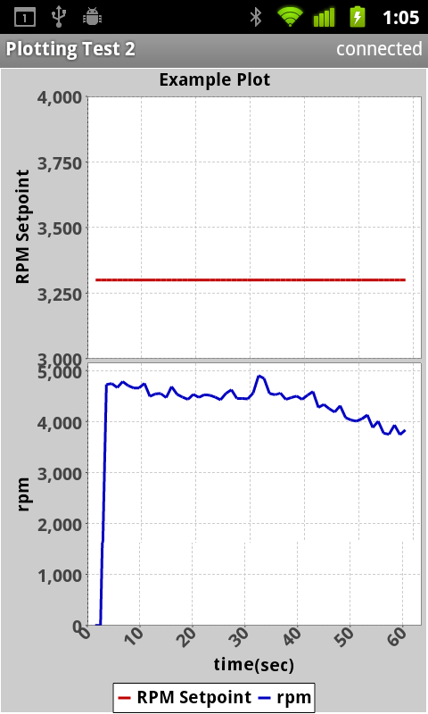

Protocol For Operations
Discovery
(pfod)
Specification V3.0.18
Matthew Ford
1st
September 2023
©2010-2023 Forward Computing and Control Pty. Ltd.
Product Warning and Limitation of Liability
This specification has intentional limitations and any software implementing it will have unintentional coding errors. It must NOT be used in any situation where there is any risk of personal injury or damage to property. See also Limitations on Liability and Remedies
Table of Contents
Revision History 4
Introduction 7
Trade Marks 7
The format of pfod messages 7
Restricted Characters 8
Messages the pfodApp can send to a pfodDevice 8
pfodApp Message Formats and Examples 8
requestCurrentTime/setLanguageFormat 8
Optional Language part of the {@ response 9
Optional 'Current' time part of the {@ response 9
Language Examples 9
'Current' Time examples 10
Current milliseconds 10
Current date and time 10
getMainMenu Format 11
Commands format 11
Menu Refresh Request 11
closeConnection format 11
keepAlive format 12
Messages a pfodDevice can send to the pfodApp 12
Text Formatting of Titles and DisplayStrings 12
Escape Sequences 13
UTF8converter.jar Program 13
Restricted Characters in Drawing's Labels and TouchActionInput dialogs 14
Restricted Characters in String Input screens. 14
Non-display Character 15
Auto-termination of formatting tags 15
Examples of Auto-termination of formatting tags 15
Handling of Tag Errors 15
Style Formats 17
Style Examples 17
Font Size Formats 17
Font Size Examples 18
Font Colour Format 18
Black Or White Font Colour 20
Font Colour Examples 20
Background Colour Format 20
Background Colour Examples 20
Default Colours 21
Setting the Sound to be Played 21
pfodDevice Message Formats and Examples 21
Empty Message format 21
Current Time / Language Message format 21
Optional Language part of the {@ response 22
Optional 'Current' time part of the {@ response 22
Examples 22
Language Examples 22
'Current' Time examples 23
Current milliseconds 23
Current date and time 23
Back and Home Messages {<} {<<} 24
Menu Message format {, 24
Empty menu example 25
Menu Items 25
Types of Menu Items 26
Plain Labels 26
Empty Labels as Spacers 26
Plain Text Buttons 27
A Disabled Button 27
A Hidden Button 28
Toggle Buttons 28
Toggle Labels 29
Text Slider Buttons 29
Text Slider Labels 30
Numeric Slider Buttons 31
Numeric Slider Example sketch 32
Numeric Slider Labels 34
Navigation Buttons 34
Dwg Menu Item Format 38
Reuse of Drawings 38
Switching Dwgs 38
Drawing Version and the isRefresh() flag 38
Loading and Reloading Dwgs, Refresh Time. 39
Forcing an Drawing to be re-loaded from the pfodDevice. 39
Automatic Drawing Reloads 40
Drawing Menu Items 41
A Simple Dwg Example 42
Scaling Drawings for display. 45
Drawing Size – How to Choose 46
X-Dimension, cols 46
Y-Dimension, rows 46
The number of columns (width, x-dimension) affects the dwg items scaling. 47
Dwg Items can be placed on fraction cols and rows. 47
Drawing Primitives 47
Drawing Primitives Library 47
List of Drawing Primitives 48
Zero, push and pop 52
InsertDwgs 52
Hide, Unhide, Erase 52
Index 53
Text and Values Alignment 54
Text Displays 55
Value Text Displays 55
User Touches and Dwg Active Areas 56
How to choose between multiple overlapping touchZones 56
Touch Filter Options 57
No Touch Zones Defined 57
Touch Zones Defined 57
Commands returned for Active Regions 59
User Input Touch Resolution 60
Touch Actions 60
TouchAction Example 61
TouchActionInput 61
Moving / Hiding/ Removing Active Areas and Drawing Primitives 64
Drawing an Dwg 64
Dwg Colours 64
Dwg Drawing Message Format 64
Updating an existing Dwg 65
Sending Dwgs and updates that are too large for a single message 66
Update Menu Message format 66
Examples 66
Slider Updates 66
Note About Slider Updates 67
Refresh and Menu Caching 68
Refresh Messages 68
Menu Caching 68
Streaming raw data Message format (Display) 69
Examples 69
Streaming raw data Message format (Plotting) 70
Overview 70
Quick Start for Plotting Messages 71
Description of Plotting Message Format 71
Examples (one data value) 73
Examples (more then one data value) 75
Examples (phase plots) 79
Examples (multiple datasets) 80
Date/Time Plots 80
RawDate Date/Time format 81
RawData Millisecond format 81
Logging Date/Time Raw Date 82
Date/Time Plot messages 82
Date/Time Plot TimeZones 83
Elapsed Time Plot messages 83
Using HH:mm:ss format for dates and times 84
String input Message format 85
Examples 86
Numeric Input Message Format 87
Examples 87
Single Selection List Message Format 88
Examples 89
Multiple Selection List Message Format 89
Examples 89
Close Connection Message Format 90
Examples 90
Displaying long messages to the user 90
Secure Connections 91
What Threats are being protected against 91
What Threats are not being protected against. 91
Outline of the Security Sequence. 91
A sample secure connection sequence 92
Required pfod Support 93
pfodApp 93
pfodDevice 94
pfodDevice coding guidelines. 94
Ignoring invalid messages 94
pfodDevice Responses 94
Navigation Guidelines 95
Responses to a Menu command sent by the pfodApp. 95
Responses to a User Input command sent by the pfodApp. 96
Navigation Guidelines Summary 96
Formatting Guidelines 96
Product Warning and Limitation of Liability and Copyrights 97
Limitations on Liability and Remedies 97
Applicable Law, Jurisdiction, and Venue 97
Copyrights 97
V1.0 – First Release
V1.1 – add support for Unicode and text formatting
V1.2 – replaced , with ` in message format, simplified time-out specification and added optional max number of chars to text input message, revised the language message, {@
V1.2.1 – added support for 128bit security when using wifi, clarified streaming raw data message operation.
V1.2.2 – added UTF-8 support as default and enlarged message size to 1024 bytes for messages send to the pfodApp. Messages sent to the pfodDevice are still limited to 255 bytes max, including the { }
V1.2.3 – Changed numeric input screen msg format Note:This change is NOT backward compatible. pfodDevice code will need to be changed if it is using the numeric input screen. Changed format of commands send to pfodDevice, no changes needed if pfodDevice is using the pfod libraries supplied for Arduino. Added numeric and slider menu items.
V1.2.4 – Added Plotting
V1.2.5 – Added {! commands to close connection
V1.2.6 – Added Slider Example code
V1.2.7 – Added Note about raw data and plotting data format – US-ASCII only
V1.2.8 – Added Formatting and Escape sequences and + slider number format.
V1.2.9 – Added Unicode input sequences and \ escape
V1.2.10 – Added slider text items
V1.2.11 – Added Toggle Slider example
V1.2.12 – Added Text Slider example
V1.2.13 – Changed Numeric Slider Offset calculation
V1.2.14 – Added menu items to bottom of Navigation Screen
V1.2.15 – Single Selection Screen can have nothing selected
V1.2.16 – Corrected Numeric input example. Cmds must start with an alpha character (a..z A..Z)
V1.2.17 – Added <ex ifs> text extras.
V1.2.18 – Added isRefresh request. If used, requires pfodParser library V2.10+
V1.2.19 – Added non-whitespace, non-display character.
V1.2.20 – Added keepAlive message.
V1.2.21 – Added example C code for non-whitespace, non-display character
V1.2.22 – Revised keepAlive message description
V2.0.1 – Added V2 menu descriptions and deprecated (removed) V1 menus
V2.0.2 – Added 256 Colour Palette
V2.0.3 – positive font sizes must have plus sign, zero font size must have + or -, i.e. <+0> or <-0>, added note about +values for sliders.
V2.0.4 – revised placement of default colour in Load/Update Dwg cmds, moreData now must be 'm' to be recognized
V2.0.5 – minor change to streaming raw data
V2.0.6 – added Hidden button and plot freeze docs
V3.0.0 – added dwg primitives
V3.0.1 – added embedded dwgs, hide/unhide and index dwg primitives
V3.0.2 – allow fraction col and row for zero push
V3.0.3 – added note about ordering of indexed touchZones
V3.0.4 – added dwg re-request
V3.0.5 – added note about touch resolution
V3.0.6 – added plotOptions for pfodApp V3.0.346
V3.0.7 – added Date time logging/plot Options for pfodApp V3.0.355
V3.0.8 – added {@} restrictions for Date/Time plots. Added Elapsed Time plots (pfodApp V3.0.356)
V3.0.8 – changed test for ms to <2^38 ~ 1979 - pfodApp V3.0.361
V3.0.9 – added ~S, sort option to plots – pfodApp V3.0.362
V3.0.10 – added alignment options for text and value dwg primitives
V3.0.11 – minor edits
V3.0.12 – added touchAction description and hide inserted image
V3.0.13 – minor edits
V3.0.14 – added dwgs.touchZone( ).. example
V3.0.15 – added dwgs.touchAction().. example
V3.0.16 – added touchActionInput
V3.0.17 – added Back and Home commands, pfodAutoCmd and auto escape of restricted chars for dwg labels and touchActionInput
V3.0.18 – added how to enter ℃ Unicode under Escape Sequences
This light weight protocol is designed to allow a general purpose application, pfodAppTM (often a mobile phone app) to discover the functionality provided by a pfodDeviceTM and allow the user to control it.
pfodDevices are usually simple micro-controller devices which implement this operation discovery protocol and have some form of data connection (often RS232 over bluetooth, but could be wi-fi or SMS). You can think of the pfodApp as a micro-browser displaying the micro-pages returned by the pfodDevice.
When queried with a GetMainMenu request, {.}, the pfodDevice typically responds with a menu/navigation of commands and associated display names. Subsequently when the user selects on of these commands, it is sent to the pfodDevice, the device performs that operation and replies either with an empty message, {}, an updated menu, a new menu or a request for user input.
The protocol is robust and flexible. Most of the fields in the messages sent by a pfodDevice are optional. Commands supported by the pfodDevice can usually be single character commands. This simplifies the programming required in the micro-controller to support the protocol. Secure connections can also be made.
Examples of the use of the messages and screen shots from the Android pfodApp program are given.
This document describes V2 of the pfod specification which uses a more compact and flexible menu structure. pfodApp continues to support both V1 and V2 menus. For a description of V1 menus see the Protocol For Operations Discovery V1 document.
pfodAppTM and pfodDeviceTM are trade marks of Forward Computing and Control Pty. Ltd. and their use is restricted. Forward Computing and Control Pty. Ltd. will only the grant use of these trade marks to a device or software that complies with this specification.
The pfod protocol has two types of messages:- messages which are enclosed by { } and streaming raw data which is unformatted.
The following notation is used to describe the format of the messages:-
<title> is a series of characters excluding } ` ~ and | e.g. Main Menu
<prompt> is a series of characters excluding } ` ~ and | e.g. Input the required level.
<string> is a series of characters excluding } ` ~ and | e.g. test input
<displayString> a <string> which is displayed to the user to name/describe a command.
<number> is an integer number e.g. 15
<cmd> is a series of characters that pfodDevice recognises as a command name. It can be either just . (dot) or as series of alphaNumeric (a..z A..Z 0..9) chars.
<cmd> cannot have leading or trailing whitespace. Typically <cmd> is a single character to simplify the receiving code in the pfodDevice.
<version> is a string consisting of only the characters a .. z, A .. Z, 0..9 . (dot) and _ (underscore). pfodApp will completely ignore a version that do not follow this format. Any leading or trailing spaces are trimmed by pfodApp.
Note: The following special commands are sent by pfodApp:- the single character command dot, {.} will request the main menu from the pfodDevice. The single character cmd !, {!} will close the connection. The single character cmd space, { } is the keep alive command which should always be responded to with an empty response, {}. The re-request command prefix :, i.e {<version>:<cmd>} which indicates to the pfodDevice that this is requesting an update to the currently cached menu.
(Note: ` shown above is the grave accent character, 0x60)
[ ] indicates optional block
[ ]* indicates zero or more blocks
Restricted characters are { } ` ~ and |
(Note: ` shown above is the grave accent character, 0x60)
See Escape Sequences below for further details.
Also see the Text Formatting of Titles and DisplayStrings formatting examples below
There three types of messages the pfodApp can send
{@ requestCurrentTime/setLanguageFormat
{.} getMainMenu
{<cmd> commands
{<versionNo>:<cmd>} for refresh request
{!} closeConnection
{ } keepAlive, space inside curly brackets
In addition to these the pfodApp can send {_ messages to negotiate a secure connection
These messages are started by a {
byte and terminated by a }
byte and the total length of each message must be <=255 bytes
including the starting {
and ending }
bytes. If the message does not terminate in 255 bytes the pfodDevice
must ignore the whole message as an invalid message.
This will
probably cause the pfodApp to time out waiting for the pfodApp to
respond. The pfodApp from www.pfod.com.au
has been coded to never send messages greater then 255 bytes to the
pfodDevice.
{@[~<language1>]* }
If used, this message is the first message sent by the pfodApp to the pfodDevice on establishing a connection. It requests the pfodDevice to respond with its current time and also optionally to respond to subsequent messages using the language from one of those specified.
The pfodDevice can reply to this message with either an empty message {} or a Language {@ message. The empty message {} indicates that the pfodDevice is not supplying its 'current' time does not support any of the languages requested and that communication in both directions will proceed using the defaults (i.e. no text formatting, default language using the UTF-8 characters set.) Note: the UTF-8 characters can be used to display native language screens to the user even though pfodDevice is nominally in the English language mode.
The pfodDevice's response can have two parts:- the language and the pfodDevice's 'current' time.
The pfodDevice Language part of the message {@ indicates which one of the preferred languages the pfodDevice can support and all future messages in both directions will use these settings.
The pfodDevice is not required to support anything but the default values described below but will honour the pfodApp's stated preference if it can.
The pfodApp is required to support the default values but can also support additional languages and request the pfodDevice to respond using these, if the pfodDevice supports them.
The optional fields are preceded by ~ for languages. The values are ordered by preference, with the most preferable listed first. e.g. {@~fr~en … }
The <language> field defines the preferred language the pfodApp would like to receive messages in. It can take values from ISO 639-1. If no value is specified the pfodDevice's default language with a character set of UTF-8, which includes the 7bit-ASCII character set is used.
The optional 'current' time part of the responses are the
the
pfodDevice's current milliseconds (millis() ) timestamp that
it will use for rawData timestamps
and
the current yearMonthDay
and Time if it will use YearMonthDay and Time as the timestamps for
its rawData. For example if the pfodDevice has an RTC (Real Time
Clock) or a GPS module to provide it date and time.
If the pfodDevice wants to plot data against date and time it MUST respond to the {@ command with its 'current' time.
{@} requests the pfodDevice communicate using the default values. Once the pfodDevice responds with {} all subsequent messages in both directions will be in English using the UTF-8 character set which includes the 7bit-ASCII character set. This request does not need to be set at the start of the connection as it the default.
{@~fr~en} requests the pfodDevice communicate in preferable French or if French is not supported then in English using UTF-8 as the character set.
If the pfodDevice responds with the empty {} message then it means the pfodDevice does not support setting languages. Only the default language English in UTF-8 is supported by the pfodDevice.
If the pfodDevice responds with the Language message {@~fr} then all subsequent messages in both directions will take place in French using UTF-8.
If the pfodDevice responds with the language message {@~en} then all subsequent messages in both directions will take place in English using UTF-8.
Although not usually used, the specification allows the pfodApp to send the setLanguageFormat message at any time to request a change in language. If the pfodDevice supports the requested language, then the change to that language occurs immediately after the pfodDevice sends its Language message response indicating the language to be used.
{@} requests the pfodDevice''s 'current' time (and to communicate using the default values as above)
If the pfodDevice responds with an empty {} response then pfodApp will ignore requests to plot data against date and time X-axis.
If the pfodDevice responds with {@`<ms_current>}, where <ms_current> is the current value of the rawData millisecond timestamp at the time the {@ response is sent, then that value together with the pfodApps current date and time when the {@ response is received will be used to plot data against date and time on the X-axis.
e.g. a response of
{@`459906}
indicates
that when the pfodDevice sent the {@
response, the current milliseconds where 459906
Note
the ` preceding the integer milliseconds
If the pfodDevice responds with {@~<yyyy/MM/dd HH:mm:ss.SSS>} OR {@~<yyyy/MM/dd HH:mm:ss>}. This is the pfodDevice's current year month day and time all numeric, at the time is sent the {@ response. Then the pfodApp will use that date and time to calculate the offset to the pfodApp's local time and UTC time for plotting rawData using date and time timestamps against time and date. The current date and time can be sent with whole seconds or fractions of a second down to 3 decimal places.
e.g. a response of
{@~2019/04/09
08:01:33.535}
indicates that
when the pfodDevice sent the {@
response, its current date and time were 2019/04/09 08:01:33.535 By
matching this data and time against pfodApp's date and time, pfodApp
can show plots of date and
time time stamped rawData, in 'local' and UTC time after adjusting
for the difference between the pfodDevice's time and the pfodApp
time.
Note the ~ preceding the string of date and
time
A
response of
{@~2019/04/09 08:01:33`459906}
provides
both the current date and time and the current milliseconds. Note:
In this example the current date and time only sends whole seconds.
If you want to plot rawData that has millisecond timestamps against date and time then the {@ response must return the current milliseconds `<ms_current>.
If you want to plot rawData that has date and time timestamps against date and time then the {@ response must return the current date and time ~<yyyy/MM/dd HH:mm:ss.SSS> or ~<yyyy/MM/dd HH:mm:ss>
{.}
This message
requests the pfodDevice's main menu.
If the pfodApp does not send a getLanguages message on establishing a connection, this is the first message the pfodApp sends to the pfodDevice and all messages in both directions are assumed to be in English using the UTF-8 character set and with no text formatting or character escaping.
The pfodDevice responds to this message, {,~} , with its main or top level message. The pfodDevice's response is usually a Menu message, {, described below, but can be any of the 9 pfodDevice messages including {}
The specification also allows the pfodDevice to respond with an empty {} message which indicates there is no main menu/navigation or user input. This type of implementation of a pfodDevice is NOT recommended.
{<cmd>}
{<cmd> `<intArg1>[ `<intArg2> ]* }
{<cmd>~<strArg1>}
These messages are sent by the pfodApp to the pfodDevice and
contain commands that the pfodDevice has advertised to the pfodApp
that the pfodDevice can handle. The messages can have additional
fields containing the users input. (see the pfodDevice Input examples
below). ~ precedes a string argument field, ` precedes
an integer argument field
When the pfodDevice has received this command message from the pfodApp, the pfodDevice always responds with a pfodDevice message, perhaps just the empty message, {}
{<version>:<cmd>}
If and only if the menu has a <version> set, then pfodApp can send this request to ask for any updates to the currently cached menu. The pfodDevice can reply with a menu update message, starting with {; to update the main menu instead of resending the entire menu. The pfodDevice can also just respond with the full menu.
{!}
This is the last
message the pfodApp sends before closing the connection, usually when
the user presses exit. No response is expected. If a pfodDevice does
not need to do anything special at the end
of a connection, it can just ignore this command.
{ }
This command is
just { space }, and is sent on WiFi connections to check if the
pfodDevice is still responding. The pfodDevice must respond with an
empty response, {}, otherwise the pfodApp will time
out and close the connection attempt to establish a new one.
There are 10 messages types that a pfodDevice can send to the application. They are indicated by the first character after the message start { character
{} Empty
{@ Current Time/Language
{, Menu
{; Update menu items
{= Streaming raw data display and plotting
{' String input
{# Numeric input
{? Single Selection input
{* Multiple Selection input
{! Close connection
{+ Dwg data
{<} Go Back
{<<}
Go Home
In addition to these the pfodDevice can send {_ messages when negotiating a secure connection.
These messages are started by a { byte and terminated by a } byte and the total length of each message must be <=1023 bytes including the starting { and ending } bytes.
Following the message type char is the prompt text. After this comes the arguments for this message. In general | precedes a command field, ~ precedes a string fields and ` precedes an integer field, although there are some exceptions.
Most of these pfodDevice messages specify commands the pfodDevice will respond to and have optional fields containing information to display to the user about the commands.
Text that is displayed to the user can be formatted by setting Style, Size and Colour. Support for any or all of this text formatting is optional, so do not use formatting to convey meaning to the users as a particular implementation of pfodApp may not render it.
There is a free Android app, pfodDesigner, to assist in designing formatted menus, previewing them and then generating the pfod message and Arduino code that will serve up the menu and handle the user's button presses.
The formats described here are the only valid formats. All other text is just passed through unchanged, including multiple consecutive spaces.
In
all cases any of the following combinations:-
carriage
return (i.e. 0x0d)
carriage return +
linefeed (i.e. 0x0d
0x0a)
linefeed
(i.e. 0x0a)
will
represent a new line sequence.
ALL pfodApp implementations must
support the following escape sequences, even if it does not render
the formatting:-
`
for `
{
for {
|
for |
}
for }
~
for ~
&
for & This escape
sequence is almost never needed to be manually entered
< for
< This
escape sequence is almost never needed to be manually entered
\ for
\ This escape
sequence is almost never needed to be manually entered
When sending text from the pfodDevice to pfodApp these escape sequence allow you to display restricted chars as part of labels etc.
Note: these are the only escape sequences supported. All other text in <displayString>, that is not a valid text format, is just passed through unchanged.
Entering Unicode Characters
The
String Input screen and the drawing touchActionInput edit dialog,
both accept Unicode sequences, e.g. \u2109, and convert them the the
equivalent Unicode character,
e.g typing in \u2109 will display
℉
while
typing in \u2103 will display ℃
To
enter unicode chars in the C\C++ Arduino code use the octal
equivalents e.g.
℉
\342\204\211
℃ \342\204\203
The UTF8converter.jar program will convert between Unicode chars, \u.... strings and octal.
For Text Displays in drawings, the text and units are automatically escaped with these sequences.
For TouchActionInput dialog user text input, the user's input is automatically escapes { } | ` ~ before sending to the pfodDevice and the parser.getEditedText() method automatically un-escapes these.
So for drawings you can freely enter restricted chars into a TouchActionInput dialog and also send restricted chars in labels.
Unicode sequences \u.... are automatically converted as they are typed in to a TouchActionInput dialog. e.g. Typing in \u2109 will display ℉ in the TouchActionInput dialog.
To
send the text \u2109
instead of ℉,
enter \u2109
When the TouchActionInput loads an existing label for editing,
it converts \u....
to \u....
to maintain the text.
You
can suppress the pfodDevice, pfodParser from escaping these chars by
calling doNotEncode()
e.g.
dwgsPtr->touchActionInput().doNotEncode().
…. .send();
and
dwgsPtr->label().doNotEncode().
…. .send();
in which case you must manually escape any restricted characters, otherwise they are just silently discarded before sending.
For String Input screens there is not automatic escaping on the input so you need to enter the escape sequences manually.
You almost never need to use & or < or \. The only time you need to < is when you want to display one of the formatting codes to the user. For example to display <u> to the user you would send <u>. The only time you need to use & is when you want to display one of the escape sequences. For example to display ` to the user you would send &#96;
There are no other cases in which you need to use < or & For example the following text does NOT need to be escaped
-3<-1
cats &
dogs
5<>4
In general just send < and & as normal characters.
\ the escape for \ is only needed when you want to enter a Unicode sequence, \u...., into a String Input screen and NOT have it automatically replaced with the Unicode char.
For example \u2109 when entered into a String Input screen will be replaced with ℉ in the String Input screen.
On the other hand, because there is no automatic escape/unescape of String Input screen text, if you want to enter \u2109 as a 6 chars then use \u2109 That will display as \u2109 in the String Input screen but will be displayed as \u2109 in any <displayString>
The \u0080 character is a non-blank, non-display character. In the pfodDesigner you can enter \u0080. In C/C++ code you can use octal equivalent “\302\200”.
You almost never need to use this character. However pfodApp will not display an empty (all white space) prompt. So you if you want to show an empty prompt, you can set the prompt to \u0080 in pfodDesignerV2 to force pfodApp to show a blank prompt. You can still format this prompt with format codes.
Tags are
automatically terminated at the end of the <title> or
<displayString>.
Enclosed tags are automatically
terminated when any outer tag is terminated.
Most of the time you don't need to use the terminating tag </ ..> as the pfodApp will close the tags for you.
Example 1
{,~Style Examples|a~<b>Bold <i>Bold Italic <u>Bold Italic Underlined}
At the end of the
<displayString>
<b>Bold <i>Bold Italic
<u>Bold Italic Underlined
the <b>, <i> and <u>
tags are automatically terminated. You do not need to the </b>,
</i> or </u> tags, but you can add them if you want to.
Example 2
{,~Style Examples|a~<b>Bold <i>Bold Italic </b>Normal}
In the
<displayString>
<b>Bold <i>Bold Italic
</b>Normal
When the </b> tag is processed, the
enclosed <i> tag is also automatically terminated. But you can
add the </u> if you want i.e. <b>Bold <i>Bold
Italic </i></b>Normal
There are only two types of tag errors:-
Unrecognised Tags, e.g. <B> it should be <b> for bold
Unmatched Termination tags, termination tags where there is no corresponding opening tag, e.g. <b> </u> where there is no corresponding preceding <u> that the </u> tag can terminate.
In both cases the tag in error is just displayed on the screen as part of the displayed text so you can find it and correct it.
e.g.
{,~Style
Examples|a~<B>Bold}
displays as

I.e.
the tag in error is just displayed where is appears in the message.
The following text style formats are available:-
<u> … </u> Underline
<b> …
</b> Bold
<i> … </i> Italic
These tags can be nested to give combined formats and can be duplicated with out error, see the example below
The menu item in this command
{,~Style Examples|a~<b>Bold\n<i>Bold Italic\n<u>Bold Italic Underlined}
renders as

Example of duplicated style tags
{,~Style Examples|a~<b>Bold, <b>Bold tag again,</b>
close bold tag and still Bold}
displays as

The following text size formats are supported:-
The positive
numbers increase the font size, the – numbers decrease the font
size.
<+1> … </+1>, <+2> … </+2>,
etc.
<-1> … </-1>, <-2> … </-2>,
<-3> … </-3>, etc.
Note: a + sign is manditory for positive font sizes (I.e. <3> is invalid as a font size, you must use <+3>).
The exact amount of increase and decrease is not defined, BUT the
increases and decreases must be logarithmic and must be reciprocal
That is. for example,
<+1><+1> … </+1></+1>
must be equivalent to <+2> … </+2> and
<+3><-1> … </-1></+3> must be
equivalent to <+2> … </+2>
In the sample pfodApp published by Forward Computing and Control
Pty. Ltd,
<+1> increase the font size by x 1.1225 and <+6>
doubles the font size, <+12> four times font size etc. and
<-1>
decreases the font size by x 0.8909, <-6> halves the font size
and <-12> quarters the font size etc.
{,~Font Size Examples|a~A <+2>bigger</+2> word}
renders as

then to make the whole menu item bigger
just add <+3> format to the front of the display text
{,~Font Size Examples|a~<+3>A <+2>bigger</+2> word}

Font colour is set by specifying the red, green and blue levels as hex digit in the range 00 to FF (or 00 to ff) OR buy the colour number from the 256 colour palette.
e.g.
<FF0000> … </FF0000> is bright
red
<00FF00> … </00FF00> is bright
green
<0000FF> … </0000FF> is bright blue
For convenience the following colour formats are predefined:-
<bk> .. </bk> is black (0), same as <000000> …
</000000>
<m> … </m> is maroon (1), same
as <800000> … </800000>
<g> … </g>
is green (2), same as <008000> … </008000>
<o>
… </o> is olive (3), same as <808000> …
</808000>
<n> … </n> is navy (4), same
as <000080> … </000080>
<p> … </p>
is purple (5), same as <800080> … </800080>
<t>
… </t> is teal (6), same as <008080> …
</008080>
<s> … </s> is silver (7), same
as <C0C0C0> … </C0C0C0>
<gy> …
</gy> is grey (8), same as <808080> …
</808080>
<r> … </r> is red (9), same as
<FF0000> … </FF0000>
<l> … </l>
is lime (10), same as <00FF00> … </00FF00>
<y>
… </y> is yellow (11), same as <FFFF00> …
</FFFF00>
<bl> … </bl> is blue (12),
same as <0000FF> … </0000FF>
<f> …
</f> is fuchsia (13), same as <FF00FF> …
</FF00FF>
<a> … </a> is aqua (14), same
as <00FFFF> … </00FFFF>
<w> … </w>
is white (15), same as <FFFFFF> … </FFFFFF>
For font colours you use either colour names e.g. <r> or RGB hex values e.g. <FF0000> or the palette number e.g. <9> (Note: font sizes have +/- in front of the number e.g. <+9> is a font size)
This 256 colour palette table is courtesy of
http://www.calmar.ws/vim/256-xterm-24bit-rgb-color-chart.html
e.g. to draw a filled circle with colour #00afff you can
use
dwgsPtr->circle().color(39).filled().radius(8).send();

There is one special font colour <bw> … </bw>. This will set the font colour to either Black or White which ever is most visible against the current background colour. This font colour is almost never needed as it is the default colour for text when one is not specified. See the Colour Selector in the pfodDesignerV2 for an example of its use.
The message
{,~Font Colour Examples|a~A <r>red</r> word}
is rendered as

then to make the menu item generally bright green, just add <00ff00> or <00FF00> to the front of the <displayString>
{,~Font Colour Examples|a~<00ff00A><r>red</r> word}

One background colour can be set for the whole display text using <bg font_color>
The background colour is set on the menu command.
e.g. <bg r>
or <bg FF0000> etc.
This format command NOT anywhere in the <displayString>. It must be set following the {, or {; command or the menu item's <cmd>
There is no closing version of this format, i.e. </bg r> is an invalid tag and should not be used.
Note: pfodApp currently does not apply individual background colour formats to single-selection and multi-selection items.
The message
{,~Background Colour Examples|a<bg bl>~A blue background}
is rendered as

To set a default background colour for the whole screen apply the background colour to the menu or update command, i.e.
{,<bg bl>~Background Colour Examples|a~A blue background}
If you do not set font and background colours, pfodApp will apply a default colour scheme, I.e. a black menu background, which becomes the default background colour for all the menu items and <bw> (contrasting black or white) for the prompt and the menu items's text.
The sound that is played is not specified by the pfodDevice. The pfodDevice just sends <ex s>. It is up to the pfodApp to play some sound. The current pfodApp defaults the sound to the default Notification Sound, but also allows the user to set the sound to be played. The sound can be set differently for different pfodDevices (connections). To set the sound for a Connection, in pfodApp open the connection for Editing and then choose “Sound Setting” from the mobile's menu.
If a sound is not played, use Sound Setting to set a sound.
These commands are sent from the pfodDevice. They are only sent in response to a command sent by the pfodApp to the pfodDevice.
{}
This message is sent back by the pfodDevice when no
other command is appropriate. It indicates the last command set to
the pfodDevice has been received and acted on. Note: there are no
spaces between the {}
If the pfodDevice sends this message in response to a menu item command or navigation direction command then the pfodApp is expected to continue to display that menu or navigation input screen to allow the user to make further selections. In contrast, when the user's input is sent by the pfodApp from a user input screen, then that screen is dismissed. What is displayed instead depends on what the pfodDevice sends back. Typically the pfodDevice sends back {} and the pfodApp displays something it thinks is appropriate, e.g. the last menu. Otherwise the pfodApp displays what the pfodDevice sends. See Navigation Guidelines for recommend responses a pfodDevice should send.
{@ [~<language1>][~<yyyy/MM/dd HH:mm:ss[.SSS]>] [`<ms_current>] }
This message is sent by the pfodDevice in response to a setLanguage, {@ , message from the pfodApp. The format and language fields can be in either order.
The optional ~<language> response can be either omitted for the English language using UTF-8, or can be one of the values from ISO 639-1. (see the examples below)
The optional ~<yyyy/MM/dd HH:mm:ss.SSS> response provides the pfodDevice's current date and time at the time the {@ response was sent. The decimals for the seconds is optional.
The optional `<ms_current> response provides the pfodDevice's current milliseconds at the time the {@ response was sent.
In
all cases any of the following combinations:-
carriage return (i.e.
0x0d)
carriage
return + linefeed (i.e.
0x0d 0x0a)
linefeed
(i.e. 0x0a)
will represent a new line sequence
The pfodDevice's response can have two parts:- the language and the pfodDevice's 'current' time.
The pfodDevice Language part of the message {@ indicates which one of the preferred languages the pfodDevice can support and all future messages in both directions will use these settings.
The pfodDevice is not required to support anything but the default values described below but will honour the pfodApp's stated preference if it can.
The pfodApp is required to support the default values but can also support additional languages and request the pfodDevice to respond using these, if the pfodDevice supports them.
The optional fields are preceded by ~ for languages. The values are ordered by preference, with the most preferable listed first. e.g. {@~fr~en … }
The <language> field defines the preferred language the pfodApp would like to receive messages in. It can take values from ISO 639-1. If no value is specified the pfodDevice's default language with a character set of UTF-8, which includes the 7bit-ASCII character set is used.
The optional 'current' time part of the responses are the
the
pfodDevice's current milliseconds (millis() ) timestamp that
it will use for rawData timestamps
and
the current yearMonthDay
and Time if it will use YearMonthDay and Time as the timestamps for
its rawData. For example if the pfodDevice has an RTC (Real Time
Clock) or a GPS module to provide it date and time.
If the pfodDevice wants to plot data against date and time it MUST respond to the {@ command with its 'current' time.
If the pfodApp sends {@~fr~en} then if the pfodDevice response with:-
{@~fr~en} requests the pfodDevice communicate in preferable French or if French is not supported then in English using UTF-8 as the character set.
If the pfodDevice responds with the empty {} message then it means the pfodDevice does not support setting languages. Only the default language in UTF-8 is supported by the pfodDevice. This also means there is not 'current' time formation and so no date/time plotting is available.
If the pfodDevice responds with the Language message {@~fr} then all subsequent messages in both directions will take place in French using UTF-8.
If the pfodDevice responds with the language message {@~en} then all subsequent messages in both directions will take place in English using UTF-8.
Although not usually used, the specification allows the pfodApp to send the setLanguageFormat message at any time to request a change in language. If the pfodDevice supports the requested language, then the change to that language occurs immediately after the pfodDevice sends its Language message response indicating the language to be used.
{@} requests the pfodDevice''s 'current' time (and to communicate using the default values as above)
If the pfodDevice responds with an empty {} response then this means there is not 'current' time formation and so no date/time plotting is available. The pfodApp will ignore requests to plot data against date and time X-axis. It also means only the default language in UTF-8 is supported by the pfodDevice.
If the pfodDevice responds with {@`<ms_current>}, where <ms_current> is the current value of the rawData millisecond timestamp at the time the {@ response is sent, then that value together with the pfodApps current date and time when the {@ response is received will be used to plot data against date and time on the X-axis.
e.g. a response of
{@`459906}
indicates
that when the pfodDevice sent the {@
response, the current milliseconds where 459906
Note
the ` preceding the integer milliseconds
If the pfodDevice responds with {@~<yyyy/MM/dd HH:mm:ss.SSS>} OR {@~<yyyy/MM/dd HH:mm:ss>}. This is the pfodDevice's current year month day and time all numeric, at the time is sent the {@ response. Then the pfodApp will use that date and time to calculate the offset to the pfodApp's local time and UTC time for plotting rawData using date and time timestamps against time and date. The current date and time can be sent with whole seconds or fractions of a second down to 3 decimal places.
e.g. a response of
{@~2019/04/09
08:01:33.535}
indicates that
when the pfodDevice sent the {@
response, its current date and time were 2019/04/09 08:01:33.535 By
matching this data and time against pfodApp's date and time, pfodApp
can show plots of date and time time stamped rawData, in 'local' and
UTC time after adjusting for the difference between the pfodDevice's
time and the pfodApp time.
Note the ~ preceding the
string of date and time
A
response of
{@~2019/04/09 08:01:33`459906}
provides
both the current date and time and the current milliseconds. Note:
In this example the current date and time only sends whole seconds.
If you want to plot rawData that has millisecond timestamps against date and time then the {@ response must return the current milliseconds `<ms_current>.
If you want to plot rawData that has date and time timestamps against date and time then the {@ response must return the current date and time ~<yyyy/MM/dd HH:mm:ss.SSS> or ~<yyyy/MM/dd HH:mm:ss>
See the plotting examples below for more details
If the pfodDevice responds with the {<} message, pfodApp
will go back to the previous menu.
If the pfodDevice responds
with the {<<} message, pfodApp will go back to the
main/home menu.
These messages can be sent in response to commands sent by menu items and drawing touchZones to control the flow of pfodApp.
The example screen shots shown here are from an emulator for an AndroidTM based pfodApp.
Note: The screen displays shown below are examples only. This specification does not define how the messages are displayed to the user.
The menu message consists of {, followed by the screen background colour, prompt text format, the prompt, the screen refresh time and the menu version number. Following this are the the menu items
{,[<bg colour>][<prompt format>]~ <title>[ ` <re-requestTime ms>][~ <version>] [ | <menu items>] * }
Where
[<bg colour>] set the default background colour for the whole menu. E.g <bg r> sets a Red background. See the Font formatting above for the available colours.
<prompt format> is the same as the <itemFormats> below but only apply to the prompt. Note the itemFormat ! (disable) does nothing for a prompt.
<title> shown at the bottom of the screen. Can be empty
<re-requestTime ms> is a request to the pfodApp to re-issue the command that returned this menu in <re-requestTime ms> milliseconds time. If missing or set to 0, then never re-request. This is used for menus that will change state at some time in the future.
<version> is the version of this menu. It is a string consisting of only the characters a .. z, A .. Z, 0..9 . (dot) and _ (underscore). pfodApp will completely ignore a version that do not follow this format. Any leading or trailing spaces are trimmed by pfodApp.
Where the | separates multiple menu items as described below.
This is the simplest menu command starts with {, and has an optional title and optional re-request time and optional version number, followed by zero or more menu items.
Menu items with empty <cmd> (all white space) are ignored completely as are menu items with duplicated commands.
Each menu item with in a menu must have a unique command,<cmd>, associated with it. The <cmd> would normally also be unique across all menus unless you want to perform the same action from different menus.
Note: pfodApp does enforces the uniqueness with in a menu by ignoring menu items with repeated commands.
If the pfodDevice responds with to a menu command with an empty message {}, the menu screen, remains displayed for further input. This is in contrast to other input screens which are usually dismissed once the user's selection is sent to the pfodDevice.
{,} an empty menu with no title.
Not very useful. See more useful examples below.
There are a variety of menu items. The two basic ones are Buttons and Labels. To turn a button into a label (which the user cannot interact with) just add ! In front of the <cmd>
Note: the type of menu item, button, label, etc is fixed by the menu response {, … and can not be changed by a subsequent menu update response {; … This also means you don't need to send the extra type flag, e.g. ! for a label in the update response.
Menu Items Format
Menu Items have the general format of
|<itemType><cmd><itemFormats>~<text>`<integer> ….
were
<itemType> is
omitted for buttons/sliders ^ for navigation button or +
for Dwgs. If the <itemType> contains ! then then
the item is displayed as a label. i.e No rounded boarder and can not
be clicked on by the user and never sends a command back to the
pfodDevice.
<cmd> a series of
characters that pfodDevice recognises as a command name. <cmd>
either be a dot (.) or a string starting with an alpha (a..z A..Z) or
and underscore ( _ ) followed by alphaNumeric (a..z A..Z 0..9) or
underscore ( _ ) chars. The dot (.) command will re-display the home
screen. <cmd> cannot have leading or trailing
whitespace. Typically <cmd> is a single character to
simplify the receiving code in the pfodDevice.
The pfodAutoCmd
pfodParser library class will generate up to 999 unique commands (c1
to c999).
<itemFormats> a mixture of 'sticky' formatting and 'non-sticky' flags.
The 'sticky' formatting consists of background colour, text style, colour and size as described in Text Formatting above. This formatting is conceptually added to the front of the this items text and is kept across menu updates. That is if you update this menu item, using the menu update message, {; then you do not need to resend these formats in the update. See below for examples.
The 'non-sticky' flags modify
the behaviour of this item. They are :-
! to disable this item
Note: This is ! AFTER <cmd>. A ! before the <cmd>
marks the type of this item as label.
- to hide this
item. That is make it not visible
+ to make this item flash
@
to play the sound set for this connection.
These 'non-sticky' flags need to be sent with the update for this menu item if you want to them to be applied again. Otherwise the item will be visible, enabled, not flashing and silent.
Following the <itemFormats> if any are the text and numbers defining this menu item. ~ precedes text, including string representing floating point numbers. ` precedes integers
In the following examples, a complete pfodDevice response is given but only a cropped Dwg of the button is shown, not the whole screen.
Labels have have a vertical bar followed by the <itemType> ! and then the <cmd> and <itemFormats> , i.e.
|!<cmd><itemFormats>~[<displayStrings>]
E.g.
{,<bg 000040>~V2 Menus|!A<bg bl>~Label}
will display a label with the text 'Label' on a blue background (<bg bl>) on a dark blue menu background (<bg 000040>)

To insert a spacer between sections of the menu you can use an empty label either with not background colour, in which case the menu background colour will be used or with a background colour of your choice. To adjust the size of the spacer use the fontsize formatting.
E.g.
{,<bg 000040>~V2 Menus|A<bg bl>~Button 1|!B<-20><bg w>|C<bg bl>~Button 2}
puts a thin white spacer between two buttons. The <-20> makes the font size very small.

{,<bg 000040>~V2 Menus|A<bg bl>~Button 1|!B<-4>|C<bg bl>~Button 2}
puts a larger spacer, with the same colour as the menu background, between two buttons. The <-4> sets a smaller then normal font size but not very small.

Plain text buttons just have a vertical bar followed by the command and <itemFormats> and an optional display text, i.e.
|<cmd><itemFormats>~ [<displayStrings>]
Note: there is no space between the | and the <cmd> and the ~
E.g.
{,<bg 000040>~V2 Menus|A<bg bl>~Button}
will display a button with the text 'Button' on a blue background (<bg bl>) on a dark blue menu background (<bg 000040>)

Clicking this button will send the associated command back to the pfodDevice, e.g.
{A}
Adding a ! after the cmd, A, as in
{,<bg 000040>~V2 Menus|A!<bg bl>~Button}
disables the button

Clicking this button does nothing. To enable this button respond to a refresh menu request with
{;|A}
This menu update keeps all the existing formats for the menu item whose <cmd> is A but clears the 'non-sticky' flags.
As shown above if you add the ! in front of the command the item is turned into a label instead. You cannot change items types in a menu update so only the menu item <cmd> is required to specify which item is being updated.
Adding a - after the cmd, A, as in
{,<bg 000040>~V2 Menus|A-<bg bl>~Button}
hides the button.
The is not visible to the user and cannot be clicked. To show the button again refresh the menu with
{;|A}
This menu update keeps all the existing formats for the menu item whose <cmd> is A but clears the 'non-sticky' flags.
As shown above if you add the ! in front of the command the item is turned into a label instead. You cannot change items types in a menu update so only the menu item <cmd> is required to specify which item is being updated.
Toggle Buttons have two values specified and toggle between them. The menu item format is
|<cmd><itemFormats>`<idx>~ [<leadingText>]~[<trailingText>]~<textOption0>\<textOption1>[~<format>]
The <idx> is
either 0 or 1 and determines which text Option is displayed between
the leading and trailing text.
<format> can be t
or s If t then only the text is displayed not the
slider. If s then only the slider is displayed not the text
e.g.
{,<bg 000040>~V2 Menus|A<bg bl>`1~Button is in the ~ state~Off\\On}
Note the \\ between the two text options inside the print string. This is need 'escape' the \ char inside a string.

Clicking anywhere in this button will toggle the setting and send the command with the current setting idx, e.g.
{A`1}
The Off or On appears between the leading text, Button is in the and the trailing text state. Note the space in the command after Button and before setting, Button is in the ~ state so that there is space around the Off and On in the final text.
Add the <format> t displays only the text part and hides the on/off slider. Clicking on the button still toggles the setting.
E.g.
{,<bg 000040>~V2 Menus|A<bg bl>`1~Button is in the ~ state~Off\\On~t}

Add the <format> s displays only the slider part and text.
E.g.
{,<bg 000040>~V2 Menus|A<bg bl>`1~Button is in the ~ state~Off\\On~s}

All these versions can be disabled by adding ! after the <cmd> A, i.e. |A!<bg bl>
Adding ! in front of the <cmd> sets the <itemType> as a label which the user cannot click. This label never sends a command back to the pfodDevice.
See the three examples below. Again note the \\ between the two text options inside the print string. This is need 'escape' the \ char inside a string.
{,<bg 000040>~V2 Menus|!A<bg bl>`1~Label is in the ~ state~Off\\On}

{,<bg 000040>~V2 Menus|!A<bg bl>`1~Label is in the ~ state~Off\\On~t}

{,<bg 000040>~V2 Menus|!A<bg bl>`1~Label is in the ~ state~Off\\On~s}

The toggle label does not accept user input but can be changed by a menu update to change the display from on to off.
For example the following menu update will change the Toggle Label setting to Off
{;|A`0}
Expanding on the previous example, you can have more than just two text options. Just add more options
|<cmd><itemFormats>`<idx>~ [<leadingText>]~[<trailingText>]~<textOption0>\<textOption1> … \<textOptionN> [~<format>]
The <idx>
ranges between 0 and (number of options -1) and determines which text
Option is displayed between the leading and trailing text.
<format>
can be t or s If t then only the text is
displayed not the slider. If s then only the slider is
displayed not the text
This example has three text options
{,<bg 000040>~V2 Menus|A<bg bl>`1~Button is in the ~ state~Off\\Low\\High}
Note the \\ between the two text options inside the print string. This is need 'escape' the \ char inside a string.

The user can move the slider and the text will update with the current setting. Moving the slider also sends a command to the pfodDevice with the currently selected index between 0 and (number_of_options -1) e.g.
{A`1}
Again using the <format> you can choose to display either only the text or only the slider.
Again adding ! in front of the <cmd> makes this into a label which the user cannot slide. i.e. to display a setting the user cannot change. Labels never send a command back to the pfodDevice.
Again note the \\ between the two text options inside the print string. This is need to 'escape' the \ char inside a string.
{,<bg 000040>~V2 Menus|!A<bg bl>`1~Button is in the ~ state~Off\\Low\\High}

Again using the <format> options you can choose to display just the text or just the slider.
The toggle label does not accept user input but can be changed by a menu update to change the display from to any of the text options.
For example the following menu update will change the Label setting to High
{;|A`2}
You can also have numeric sliders. The format is
|<cmd><itemFormats>`<currentValue>~[<leadingText>]~[<trailingText>]
`<maxValue>`<minValue>~<maxScaleValue>~<minScaleValue>
The <maxValue> and <minValue> value set the range of <idx> values the slider will display.
The <maxScaleValue> and <minScaleValue> set how the current index will displayed in the text. They must be numbers in text form. e.g. 5 or 5.0 or 5e-2 etc. If you want a + sign shown for the current scaled slider value, then at least one of the scaleValues must have a plus sign, i.e. +5 or +5.0
For example (note here neither scaleValues ~5.0~-5.0 has a + sign so the display will not show a +sign either)
{,<bg 000040>~V2 Numeric Slider~v1|A<bg bl>`40~Numeric Slider ~%`100`0~5.0~-5.0}

Sets the command for this slider to A and current value as
40
{,<bg 000040>~V2 Numeric Slider~v1|A<bg
bl>`40~Numeric Slider ~%`100`0~5.0~-5.0}
Sets the leading text to 'Numeric Slider '
{,<bg 000040>~V2 Numeric Slider~v1|A<bg bl>`40~Numeric Slider ~%`100`0~5.0~-5.0}
Sets the trailing text to '%'
{,<bg 000040>~V2 Numeric Slider~v1|A<bg bl>`40~Numeric Slider ~%`100`0~5.0~-5.0}
Limits the values sent to and from the pfodDevice to be in the range max 100, min 0
{,<bg 000040>~V2 Numeric Slider~v1|A<bg bl>`40~Numeric Slider ~%`100`0~5.0~-5.0}
And sets the display range to be max 5.0 min -5.0
{,<bg
000040>~V2 Numeric Slider~v1|A<bg bl>`40~Numeric Slider
~%`100`0~5.0~-5.0}
That
is pfodApp will convert the value 40 in the range 0 to 100 into the
equivalent value in the range -5 to 5 using the formula
Display
Value = <minScaleValue>
+ (<currentValue>
- <minValue>)
* (<maxScaleValue>
- <minScaleValue>)
/ (<maxValue>
-
<minValue>)
The user can move the slider and the text will update with the current scaled display value. Moving the slider also sends a command back to the pfodDevice with the current (unscaled) value between <minValue> and <maxValue>, in this example between 0 and 100 e.g.
{A`40}
See pfodSliderExample in the pfodParser examples directory.
The menu message is
{,<bg 000040>~V2 Numeric Slider~v1|A<bg bl>`40~Numeric Slider ~%`100`0~5.0~-5.0}
This sets an long value, in the range 0 to 100, scaled at the
mobile by pfodApp to be displayed in the range -5.0 to +5.0. As the
slider is moved pfodApp sends back the new setting in the range 0 to
100 using the command set for this button e.g.
{A`40}
Note that this menu has a version set ~v1 so pfodApp will cache this menu next time pfodApp requests this main menu, pfodApp will send the version of the currently cached menu.
{v1:.}
i.e. {<verson>:.} where the . (dot) is requesting the main menu.
If the version matches the pfodDevice version setting then parser.isRefresh() will return true and your code needs only send the menu updates, if any, rather then the whole menu. Sub-menus and Dwgs can also have a version set.

/* ===== pfod Command for Numeric Slider Control ==== {,<bg 000040>~V2 Numeric Slider~v1|A<bg bl>`40~Numeric Slider ~%`100`0~5.0~-5.0} */ // Using Serial and 9600 for send and receive // Serial D0 (RX) and D1 (TX) on Arduino Uno, Micro, ProMicro, Due, Mega, Mini, Nano, Pro // This code uses Serial so remove Bluetooth shield when programming the board /* * (c)2016 Forward Computing and Control Pty. Ltd. * NSW Australia, www.forward.com.au * This generated code may be freely used for both private and commercial use */ // ====================== #include <EEPROM.h> #include <pfodParser.h> pfodParser parser("v1"); // need latest pfodParser library V2.31+ // set menu and Dwg versions to "v1" // if version is not set then will never ask for a refresh of Dwg or menu // as neither will be cached. int sliderSetting = 40; // initial slider setting // the setup routine runs once on reset: void setup() { Serial.begin(9600); for (int i = 3; i > 0; i--) { // wait a few secs to see if we are being programmed delay(1000); } parser.connect(&Serial); // connect the parser to the i/o stream } // the loop routine runs over and over again forever: void loop() { byte cmd = parser.parse(); // pass it to the parser // parser returns non-zero when a pfod command is fully parsed if (cmd != 0) { // have parsed a complete msg { to } byte* pfodFirstArg = parser.getFirstArg(); // may point to \0 if no arguments // in this msg. long pfodLongRtn; // used for parsing long return arguments, if any if ('.' == cmd) { // pfodApp has connected and sent {.} , it is asking for the main menu // send back the menu designed if (!parser.isRefresh()) { sendMainMenu(); } else { sendMainMenuUpdate(); } // now handle commands returned from button/sliders } else if ('A' == cmd) { // user moved slider -- parser.parseLong(pfodFirstArg, &pfodLongRtn); // parse first arg as a long sliderSetting = (int)pfodLongRtn; // set output sendMainMenuUpdate(); // always send back a pfod msg otherwise pfodApp // will disconnect. } else if ('!' == cmd) { // CloseConnection command closeConnection(parser.getPfodAppStream()); } else { // unknown command parser.print(F("{}")); // always send back a pfod msg otherwise pfodApp // will disconnect. } } } void closeConnection(Stream *io) { // add any special code here to force connection to be dropped } void sendMainMenu() { parser.print(F("{,")); // start a V2 Menu screen pfod message parser.print(F("<bg 000040>~V2 Numeric Slider")); // set background dark blue // and the screen prompt parser.sendVersion(); // send ~version. // Still ok to do this even if there is no version specified. parser.print(F("|A<bg bl>")); // set menu item cmd to A and background to blue parser.print(F("`")); // send ` before sliderSetting value parser.print(sliderSetting); // send the current setting parser.print(F("~Numeric Slider ~%")); // send leading and trailing text, // note the space at the end of the leading text parser.print(F("`100`0~5.0~-5.0")); // send the data max and min and // the display max and min // pfodApp does the scaling from data to display parser.print(F("}")); // close pfod message } void sendMainMenuUpdate() { parser.print(F("{;")); // start an V2 Update Menu pfod message parser.print(F("|A")); // update the menu item with cmd A parser.print(F("`")); // send ` before the current updated sliderSetting value parser.print(sliderSetting); // send the current setting parser.print(F("}")); // close pfod message } // ============ end of menu item ===========
Again adding ! in front of the <cmd> makes this numeric slider into a label which the user cannot slide. i.e. to display a setting the user cannot change. This label never sends a command back to the pfodDevice. e.g.
{,<bg 000040>~V2 Menus~v1|!A<bg bl>`40~Numeric Slider Label ~%`100`0~5.0~-5.0}

Adding a ^ in front of the a menu item command turns an ordinary button into one of 5 navigation buttons. (Note: Dwg Menu Items, below, provide a much more flexiable means of adding buttons.)
The Navigation buttons are groups of up to 5 consecutive buttons each marked with ^ which are displayed as Left, Right, Up, Down and Home buttons in a navigation row in the menu.
For example
{,<bg 000040>~V2 Menus|^A~Left Text|^B~Right Text|^C~Up Text|^D~Down Text|^E~Home\nText}
displays as

Note there is a newline between Home and Text. The Home key can display 2 short lines of text.
You can add other buttons and labels before and after this navigation group and the display will scroll as necessary.
When you press any of the buttons, the associated command is sent to the pfodDevice. E.g. clicking the right button, the pfodApp sends the command
{B}
to the pfodDevice.
You can apply background and text colours to each button. You also don't need to display all 5 buttons. You can hide the buttons you don't want by using the '-' flag after <cmd>
For example add a – after the A and B and E command hides the Left and Right and Home buttons
{,<bg 000040>~V2 Menus|^A-~Left Text|^B-~Right Text|^C~Up Text|^D~Down Text|^E-~Home\nText}

If you are hiding a button you don't need to provide any text and you can use a dummy command because that button will never send a message as long as it is hidden. So the following message produces the same screen as above
{,<bg 000040>~V2 Menus|^d1-|^d2-|^C~Up Text|^D~Down Text|^d3-}
Where d1, d2 and d3 are three unique dummy commands for the hidden buttons.
As mentioned above navigation buttons are grouped up to 5 at a time. This grouping stops when any non-navigation menu item is found.
If you don't want to add another menu button you can use as small spacer with the same colour as the menu background. For example
|!s1<-18>
will add an invisible spacer with a command of s1
For example
{,<bg 000040>~V2 Menus|^A~Left|^B~Right|!s1<-18>|^d1-|^d2-|^C~Up|^D~Down}
Has two navigation groups separated by a small spacer with terminates the first group after |^B~Right
This displays as

The pfodParser library has an example sketch, pfodNavigationExample.ino, that show other combinations of buttons.

As with other menu items adding a ! in front of the <cmd> makes the navigation button into a label instead.
The format for the Drawing menu item is
|+<cmd><itemFormats>~<loadCmd>
Where the + preceding the <cmd> indicates that this is an Drawing row.
<loadCmd> is the command pfodApp will send when requesting the Dwg data from the pfodDevice. See examples below. Internally pfodApp stores the Dwgs in a local file under the file name I<connectionRowId>_<loadCmd> where the <connectionRowId> is the row number of this connection in the pfodApp's connection database.
For
example as shown in the above examples
{,|+A~x}
defines a menu with no prompt and just one menu item, an Drawing menu item with menu item cmd, A and Drawing load cmd, x
Drawings can be re-used in other menu items in the same or other menus, by using the same <loadCmd>, but only for the same pfodDevice. If you specify a version string, the cache of Drawings (and menus) is kept after you close the connection and used the next time you connect to that pfodDevice.
There are two
simple ways of switching Dwgs :-
i) Have two Drawing rows in the
menu and hide/show the one you want via menu updates
ii) Have one
Drawing row in the menu and update the menu to change the <loadCmd>
which will force the other Dwg to be loaded and displayed, or just
displayed if it is already cached.
parser.sendVersion();
parser.sendRefreshAndVersion(
msec )
Each Drawing can have a <version> assigned to it. That is parser version is used for the drawing version, i.e.
void sendDrawing_z() {
dwgs.start(50, 30);
parser.sendVersion();
. . .
The
drawing version, if specified, must be the same and the menu version.
When pfodApp uses the <loadCmd> to re-request the Dwg data, if there is already a cached Drawing then the pfodApp will precede the <loadCmd> with <version>:
e.g. if the drawing was used in the menu row
|+A~c
then when pfodApp first requests the drawing data, (see loading below) it omits the version since there is no cached drawing, e.g.
{c`0}
but when is already has a cached drawing and pfodApp is requesting a reload of the drawing data it adds the version string e.g.
{v1:c`0}
If you do not specify an Drawing <version> then your code will be expected to send the complete drawing data each time the <loadCmd> is received.
It is recommended that you always set a <version> for Dwgs once you have finished your development
In the same way menu versions are parsed in the pfodParser library, if the version string matches the version string the parser was created with, then the isRefresh() flag is set.
The parser.isRefresh() flag should be tested to see if this is a refresh of an existing cached Drawing or an initial load.
If parser.isRefresh() returns false then you should send the whole initial drawing. If parser.isRefresh() returns true then you can either ignore it (and send an empty response { } )or send an update to the existing drawing.
Note: The total bytes in any one response must be less then 1024 including the opening and closing { }
When pfodApp displays a menu that has an Drawing row, pfodApp checks if it has already an drawing cached under that <loadCmd> for this connection,. If it has the drawing, pfodApp displays it and requests a refresh, otherwise pfodApp starts a background process to request the entire drawing.
pfodApp request the entire drawing by sending a series of requests to the pfodDevice using the <loadCmd> with and a <startingOffset> which starts at 0 and increments for each request for more drawing data.
E.g. for the Drawing menu row
|+A~c
if pfodApp does not already have c Drawing then, in the background, pfodApp sends the command
{c`0}
to request the Drawing data. The <startingOffset> of 0 indicates this is the first load request for this Drawing, this time.
The pfodDevice can respond either by defining a new Drawing OR update an existing Drawing.
To force a reload of an Drawing send the <cmd> for that Drawing row again in a menu update message {;
That is send {;|<cmd>}
{;|A}
This forces a reload of the Drawing associated with that row.
If pfodApp already has this Drawing cached then pfodApp will request a refresh using the cached Drawing's version , e.g. if the cached Dwg's version is v1 pfodApp will send
{v1:c`0}
to request a reload of this Dwg.
If you updated the menu row with a new, different <loadCmd> you can replace the existing Dwg with another one.
To disable an Dwg with out reloading it just use {;|<cmd>!}
e.g. {;|A!}
To hide the
Dwg use {;|A-}
Drawings can also have automatic reload time specified, separate from the menu reload, i.e. to reload the z drawing every 5sec (5000 ms) without reloading the entire menu use
void sendDrawing_z() {
dwgs.start(50, 30);
parser.sendRefreshAndVersion(5000);
. . .Note: There must be a non-empty menu version for drawing reload to work.
If the drawing update includes an insertDwg( ) statement then the inserted drawing is also reloaded.

You can create your own custom controls with the drawing primitives, see the on-line tutorial, pfodControls at www.pfod.com.au
Displaying Drawings is a two step process. First you need to define a menu item that will show the Drawing. The <itemType> is + for this menu item, or !+ or +! for the label (non-interactive) version. This Drawing menu item has it usual associated command and in addition specifies an Drawing <loadCmd> which pfodApp sends when it want to load or reload the Drawing. The drawing loading takes place in the background.
You need to add code in your pfodDevice to serve up the drawing when the pfodApp sends the drawing <loadCmd>
The pfodParser library for Arduino includes a pfodDwgs class that simplifies building dwg messages.
At the top of the sketch after declaring the parser add the line
pfodDwgs dwgs(&parser); // drawing support
to declare the dwg class object. The examples in this section assume this line has been added.
The pfodDwgs class includes may methods that can be used to build and send drawing primitives. See below for examples
This drawing menu
item is a 50 x 50 dwg (width x height) with just a red and blue
rectangle.
(See SimpleDwgExample_ESP8266 sketch in the
pfodParser library examples)
pfodParser parser("V1"); // create a parser with menu version string to handle the pfod messages pfodDwgs dwgs(&parser); // drawing support … … void loop() { … … uint8_t cmd = parser.parse(); // parse incoming data from connection // parser returns non-zero when a pfod command is fully parsed if (cmd != 0) { // have parsed a complete msg { to } if ('.' == cmd) { // pfodApp has connected and sent {.} , it is asking for the main menu if (!parser.isRefresh()) { sendMainMenu(); // send back the menu designed } else { sendMainMenuUpdate(); // menu is cached just send update } } else if ('A' == cmd) { // user touched menu Item A parser.print(F("{}")); // finished, always send back a response or pfodApp will timeout } else if ('a' == cmd) { // request for dwg 'a' if (parser.isRefresh()) { //if refresh just send update sendDrawingUpdates(); } else { // else send whole dwg long pfodLongRtn = 0; uint8_t* pfodFirstArg = parser.getFirstArg(); parser.parseLong(pfodFirstArg, &pfodLongRtn); sendDrawing(pfodLongRtn); } } else if ('!' == cmd) { // CloseConnection command closeConnection(parser.getPfodAppStream()); } else { // unknown command parser.print(F("{}")); // always send back a pfod msg // otherwise pfodApp will disconnect. } } } } … … void sendMainMenu() { parser.print(F("{,~Simple Dwg Example")); // start a Menu screen pfod message parser.sendRefreshAndVersion(0); // send the menu version, no refresh parser.print(F("|+A~a")); // send menu items parser.print(F("}")); // close pfod message } void sendMainMenuUpdate() { parser.print(F("{;")); // start an Update Menu pfod message parser.print(F("|A")); // send menu items updates, this updates dwg parser.print(F("}")); // close pfod message } void sendDrawing_a(long dwgIdx) { // send parts of dwg. if (dwgIdx == 0) { // first part of dwg dwgs.start(50, 50, dwgs.WHITE, true); // true means more dwg to come parser.sendRefreshAndVersion(0); // send the menu version, no dwg refresh dwgs.pushZero(0, 0, 1.0); // change zero point and scale factor, if needed dwgs.rectangle().color(dwgs.BLUE).size(40, 40).offset(5, 5).send(); dwgs.rectangle().color(dwgs.RED).size(30, 30).offset(10, 10).send(); dwgs.popZero(); // restore previous zero setting dwgs.end(); } else if (dwgIdx == 1) { // second part of dwg if larger then 1024 bytes dwgs.startUpdate(false); // false means no more parts // nothing here but could add more dwg items dwgs.end(); } else { parser.print(F("{}")); // always return something } } void sendDrawingUpdates_a() { // no updates here Note: need start/end to redisplay dwg on re-connection dwgs.startUpdate(); dwgs.end(); }
The drawing menu item is
parser.print(F("|+A~a"));
+ indicates a dwg menu item A is the menu
command and ~a is the dwg load command, a
When pfodApp processes this menu item, it automatically sends the, in the background, the dwg load command {a`0} to load the first part of the drawing to be displayed in this menu item.
In the command processing code, this section deals with the 'a' command
} else if ('a' == cmd) { // request for dwg 'a'
if (parser.isRefresh()) { //if refresh just send update
sendDrawingUpdates_a();
} else { // else send whole dwg
long pfodLongRtn = 0;
uint8_t* pfodFirstArg = parser.getFirstArg();
parser.parseLong(pfodFirstArg, &pfodLongRtn);
sendDrawing_a(pfodLongRtn);
}
The code retrieves the argument to the of the {a command. In this case 0 which pfodApp sent to request the first part of the dwg, and calls sendDrawing(0) to send that part.
void sendDrawing(long dwgIdx) { // send parts of dwg. if (dwgIdx == 0) { // first part of dwg dwgs.start(50, 50, dwgs.WHITE, true); // true means more dwg to come parser.sendRefreshAndVersion(0); // send the menu version, no dwg refresh dwgs.pushZero(0, 0, 1.0); // change zero point and scale factor, if needed dwgs.rectangle().color(dwgs.BLUE).size(40, 40).offset(5, 5).send(); dwgs.rectangle().color(dwgs.RED).size(30, 30).offset(10, 10).send(); dwgs.popZero(); // restore previous zero setting dwgs.end();
This dwg.start( ) msg defines a drawing, 50 x 50 with a WHITE background and more msgs to follow. The dwg version is the same as the parser and 0 refresh turns off automatic re-request for this dwg. The pushZero statement actually does nothing in this case, but can be used to move the zero and scaling of the following rectangle statements.
This code sends back the response to pfodApp to create the dwg
{+15`50`50~m`0~V1|z~0~0|r~12~40~40~5~5|r~9~30~30~10~10|z}Since there is a more parts indicator (i.e. ~m), pfodApp knows to ask for the next part of this dwg and sends dwg load command {a`1} and so on until either the returned dwg msg is empty, {+} or an empty message is returned, {} or for the dwg message is missing the more parts indicator.
Once this V1 version of the dwg has been loaded, pfodApp caches it and next time the pfodApp connects or reload the menu item, it send the dwg load msg {V1:a`0} The parser checks the V1 against the current parser version and if it matches the isRefresh() returns true. This tells the code the dwg is already cached and only the updates, if any, need to be sent. In the example there are not updates.
dwgs.start(cols, rows, backgroundColor = dwgs.WHITE, moreData = 0);
In the previous example the drawing was 50 (cols) x 50 (rows) drawing. When pfodApp displays a drawing, it automatically scales it to fit the available screen space. In this case, as shown above the drawing is scaled to fit the width of the screen. However if the drawing is longer than the available space on the screen, it is scaled down to ensure the entire drawing is visible on one screen. E.g. 50 x 100
For example in the above code, changing the drawing from a 50 x 50
dwgs.start(50, 50, dwgs.WHITE, false);
to a 50 x 100
dwg
dwgs.start(50, 100, dwgs.WHITE, false);
displays
scaled down so that the height fits on the screen.
This results in the width being scaled down as well to maintain the aspect ratio.
When an image will be scaled down depends on how much space the prompt takes up on the screen and on the screen aspect ratio of the particular mobile phone. It does not depend on the screen resolution or overall screen size of the mobile phone.
Note that you can have more than one Drawing menu item per menu, so if you need more space for your drawing controls you can add another drawing menu item.
Your device code defines the basic Drawing size, up to 255x255, and aspect ratio of the Drawing.
The x-dimension (the cols) defines the touch resolution for the drawing. An x-dimension of 50 cols is recommended as it is difficult for the user to position their finger more accurately than that. As discussed below setting the dwg size does not limit the positioning of dwg items/elements which can be positioned with fractional offsets.
The x-dimension also affects the scaling of the drawing. If you design a drawing on a 50x50 canvas and then display it on a 100x100, it will will be drawing at half size. You can also use the pushZero scaleFactor to scale your drawings
Tip: Design your drawings at about the size they will be displayed so you can confirm the readablity of the text labels.
The y-dimension (the rows) defines the aspect ratio. E.g. 50 x 50, ie. 1:1 will be a square dwg. Drawing with aspect ratios larger than 1:1.3 (e.g. 50 x 65) may be shrunk to fit on the screen as the Scaling Drawings for Display and the 50x77 (1:1.5) drawing above illustrates.
For example a 50x25 drawing has a drawing basic resolution of 50 across and 25 down and is half as high as it is wide. However since you can scale the dwg primitives and place them with fractional offsets (using the Zero primitive), this basic resolution does not restrict the drawing resolution.
The size of drawing you choose just sets the aspect ratio and provides convenient grid for you to start placing your dwg items on.
As described above, the drawing is automatically scaled to fill your mobile's screen, while retaining the drawing's specified aspect ratio, regardless of the screen size and the number of screen pixels your mobile has. This provides consistency across various devices. Drawings will look visually the same on different screens apart from the effect of rounding to the screen's pixel locations.
If you have laid out some drawing primatives and then later increase the number of columns (width) of your drawing, all the drawing items (including text) will get smaller as they stay on their original locations but the grid size is smaller. Conversely if you reduce the number of columns, all the drawing items and text get larger.
While the cols and rows of an Drawing specify the aspect ratio and the resolution of user inputs, it does not limit the placement of individual drawing primitives. Drawing primitives can be offset from the current zero by fractional cols and rows.
Also since dwg primitives can be scaled down, as well as offset (using Zero) , a 10x10 dwg primitive can be scaled into a 1 col x 1 row on the final dwg and the user input resolution becomes 10 times finer within that 1x1 square of the final dwg. See the examples below.
Dwgs can be constructed with the following Drawing Primitives,
see the examples below. Add
pfodDwgs dwgs(&parser);
at
the top of the sketch below the parser declaration
This specification deals with the message format for the drawing primitives. However the pfodParser Library V3.1+ includes convenient methods to build and send these messages in the correct format.
For example
#include <pfodParser.h> pfodParser parser(""); // create a parser to handle the pfod messages pfodDwgs dwgs(&parser); // drawing support …. …. void sendDrawing_a(long dwgIdx) { // send parts of dwg. if (dwgIdx == 0) { // first part of dwg dwgs.start(50, 30, dwgs.WHITE); // 50 x 30 drawing
// background defaults to WHITE if omitted i.e. dwgs.start(50,30); parser.sendRefreshAndVersion(0); // parser version to cache this image // move zero to 10,12 and scale by 2.1 times dwgs.pushZero(10, 12, 2.1); // circle in a rectangle with a label below dwgs.rectangle().filled().color(dwgs.GREY).rounded().size(5.5, 5.5)
.offset(-2.75, -2.75).send(); dwgs.label().text(F("Led")).color(dwgs.RED).offset(0, 4.3).send(); dwgs.circle().filled().color(LedOn?dwgs.YELLOW:dwgs.BLACK)
.radius(1.5).send(); // define a touch zone dwgs.touchZone().cmd('a').size(4, 4).offset(-2, -2).send(); // what to show when zone touched, note no .send() for this action dwgs.touchAction().cmd('a').action( // dwgs.circle().filled().color(LedOn?dwgs.GREY:dwgs.YELLOW).radius(2.3) ).send(); dwgs.popZero();
dwgs.end(); // close message }
See the on-line tutorial at www.pfod.com.au
for detailed examples of using this library.
This is a summary of the drawing primitives. More details on are given in the following sections.
The dwg primitives are: Line, Rectangle, Arc, Circle, Label (text or number), Index, Hide, Unhide, Erase, touchZone, touchAction, touchActionInput, pushZero, popZero and InsertDwg
In the examples below the examples show the defaults that are applied if that method is not used. E.g. .size(1,1) indicates that if size is not specified it will default to 1 x 1 and .color(dwgs.BLACK_WHITE) indicates that if color is not specified it defaults to BLACK_WHITE which chooses either BLACK or WHITE whichever gives the highest contrast. The default idx(0) is means no index is assigned and the primitive is drawn on the lowest level in the order sent.
In all cases the send() method terminates this primitives and sends the data. Each primitive must have send() at then end of it. The methods can be added in any order between the primitive name() and the send()
Line | l [`idx] ~ [<colour>]
~ colDelta ~ rowDelta [ ~ colOffset [ ~ rowOffset
]]
dwgs.line().idx(0).color(dwgs.BLACK_WHITE).size(1,1).offset(0,0).send();
offset
args can be dwgs.TOUCHED_COL and dwgs.TOUCHED_ROW
Rectangle | r[c]
[`idx]
~ [<colour>]
~ width ~ height [
~ colOffset [
~ rowOffset
]]
dwgs.rectangle().centered().idx(0).color(dwgs.BLACK_WHITE).size(1,1).offset(0,0)
.send(); default
is not
centered()
Filled Rectangle | R[c]
[`idx]
~ [<colour>]
~ width ~ height [
~ colOffset [
~ rowOffset
]]
dwgs.rectangle().filled().centered().idx(0).color(dwgs.BLACK_WHITE).size(1,1)
.offset(0,0).send(); default
is not
centered()
Rounded Rectangle | rr[c]
[`idx]
~ [<colour>]
~ width ~ height [
~ colOffset [
~ rowOffset
]]
dwgs.rectangle().rounded().centered().idx(0).color(dwgs.BLACK_WHITE).size(1,1)
.offset(0,0).send(); default
is not
centered()
Fill Rounded Rectangle | RR[c]
[`idx]
~ [<colour>]
~ width ~ height [
~ colOffset [
~ rowOffset
]]
dwgs.rectangle().filled().rounded().centered().idx(0).color(dwgs.BLACK_WHITE)
.size(1,1).offset(0,0).send(); default
is not
centered()
Circle | c [`idx]
~ [<colour>]
~ dRadius [
~ colOffset [
~ rowOffset
]]
dwgs.circle().idx(0).color(dwgs.BLACK_WHITE).radius(1).offset(0,0).send();
Filled
Circle | C
[`idx] ~ [<colour>] ~ dRadius [ ~ colOffset [ ~ rowOffset
]]
dwgs.circle().filled().idx(0).color(dwgs.BLACK_WHITE).radius(1).offset(0,0).send();
Arc | a [`idx]
~ [<colour>]
~ dArcAngle ~ dStartAngle ~ dRadius [
~ colOffset [
~ rowOffset
]]
dwgs.arc().idx(0).color(dwgs.BLACK_WHITE).radius(1).start(startDegs)
.angle(angleDegs).offset(0,0).send();
Filled
Arc | A
[`idx] ~ [<colour>] ~ dArcAngle ~ dStartAngle ~ dRadius [ ~
colOffset [ ~ rowOffset ]]
dwgs.arc().filled().idx(0).color(dwgs.BLACK_WHITE).radius(1).start(startDegs)
.angle(angleDegs).offset(0,0).send();
Text | t [`idx]
~ [<colour>]
~ text [ ~ colOffset [
~ rowOffset [ ~ alignment (C
or L or R)
]]]
dwgs.label().idx(0).color(dwgs.BLACK_WHITE).text(
char*
or " " or F(" ") )
.fontSize(0).bold().italic().underline().offset(0,0).center().send();
OR
for a floating point number where text
is the prefix and units
the suffix
dwgs.label().idx(0).color(dwgs.BLACK_WHITE).text(
char*
or " " or F(" ") )
.fontSize(0).bold().italic().underline().offset(0,0).center()
.units("
" or
F(" ") ) default "", empty
.decimals(2)
allowable range -6 to +6
.floatReading(
..)
if specified the no scaling is performed it is just displayed with
specified decmials
center(),
the default, can be replaced with either left()
or right()
alignment .
The
text( .. )
can include any of the formatting listed under section Text Formatting of Titles and DisplayStrings
,
except <bg ..>. Restricted characters in text(..)
are automatically escaped (see Restricted Characters).
Value
(formatted) | v
[`idx] ~ [<colour>] ~ text ~ colOffset ~ rowOffset `value
~units `min`max ~displaymin ~displaymax ` decimals [ ~ alignment
(C
or L or R)]
dwgs.label().idx(0).color(dwgs.BLACK_WHITE).text(
char*
or " " or F(" ") )
.fontSize(0).bold().italic().underline().offset(0,0).center()
.intValue(value)
if specified then range (max, min) mapped to (displaymax
,displaymin) before displaying with specified decimals
.maxValue(1)
.minValue(0)
int values defaults 1, 0
.displayMax(1.0)
.displayMin(0.0)
float values, defaults 1.0, 0.0 corresponding to maxValue() and
minValue().
The integer value need not be in the range (max,
min)
center(),
the default, can be replaced with either left()
or right()
alignment.
The text(
.. )
can include any of the formatting listed under section Text Formatting of Titles and DisplayStrings
,
except <bg ..> Restricted characters in text(..)
and units(..)
are automatically escaped (see Restricted Characters)
Hide
| h
~
cmd
OR | h `
idx
dwgs.hide().cmd(cmd).send();
hides touchZone with this cmd.
dwgs.hide().idx(z_idx).send();
hides primitive with this index
Hide does not work for
insertedDwgs, use erase()
Unhide
| uh ~
cmd
OR | uh `
idx
dwgs.unhide().cmd(cmd).send();
unhides touchZone with this cmd
dwgs.unhide().idx(z_idx).send();
unhides primitive with this index
Unhide does not work for
insertedDwgs, use erase()
/ insertDwg()
The following dwg cmds move and scale and control the above drawing primitives.
Zero (push) | z ~ col ~ row ~ scaling
dwgs.pushZero(cols,
rows = 0.0, scaling = 1.0);
Moves drawing zero and changes scaling
rows defaults to 0.0,
scaling defaults to 1.0
Note: no send() needed for pushZero()
Zero (pop) |
z
dwgs.popZero();
undoes
the most recent last push
Note: no send() needed for popZero()
TouchZone
| x[c]
[`idx] ~
cmd
~ width
~ height
[
~ colOffset [
~ rowOffset ]]
[`filter]
dwgs.touchZone().cmd(cmd).idx(0).centered().size(1,1).offset(0,0)
.filter(dwgs.TOUCH).send()
The
filter can any OR ( | ) combination of
dwgs.TOUCH |
dwgs.DOWN | dwgs.DRAG | dwgs.UP | dwgs.CLICK | dwgs.PRESS |
dwgs.ENTRY | dwgs.EXIT | dwgs.DOWN_UP | dwgs.TOUCH_DISABLED
See
User Touches and Dwg Active Areas
below for details
TouchAction
| X ~ cmd
~ Drawing
Primitive
dwgs.touchAction().cmd(cmd).action(
… ).send();
The
argument for the action( )
entry is one of the primitives above minus its send() method.
e.g.
dwgs.touchAction().cmd('a').action(
dwgs.rectangle().size(3,2) ).send();
See
User Touches and Dwg Active Areas
below for details
offset(
.. , ..) and size(
.. , ..) and
dwgs.label().value( .. )
can have the special args, dwgs.TOUCHED_COL
and dwgs.TOUCHED_ROW
which are replaced when the primitive is processed with the
currently touched col / row relative to the touchZone
zero either (0,0) at center if the touchZone is centered()
or (0,0) top left if not centered(), and using the current
pushZero()
scaling.
See User
Touches and Dwg Active Areas
below for details
TouchActionInput
| XI ~ cmd
~
prompt[`idxOfTextItem]
dwgs.touchActionInput().cmd(cmd).prompt(...).textIdx(idxOfTextItem).send();
When
this action is triggered by the TouchZone with command cmd,
a single line text exit dialog box is opened with the given prompt.
The edit text is populated with the current text from the label
(Text or Value dwg primitive) identified by the idxOfTextItem.
If
the idxOfTextItem
dwg primitive is 0 or not specified or is not a label
(Text or Value primitive), the initial edit text is empty, but the
edited text is still send with the cmd
to the pfodDevice.
After
editing, the edited text is sent in the touch cmd
and the other touchActions are executed immediately. See User
Touches and Dwg Active Areas
below.
{ cmd
~ touchZoneCmd
` col
` row
` touchType
~ editedText}
Note: any restricted
characters in editedText are escaped before sending, see Restricted Characters.
Note:
No validation is performed on the editedText
sent with the cmd,
the pfodDevice must do any validation required.
Note: The length
of the editedText
is truncated, if necessary, to limit the cmd sent be less than the
255 byte pfod limit for commands.
The text displayed and sent
back to the pfodDevice is UTF8 encoded bytes. That is a series of
bytes are sent, NOT characters. If you want to enter a non-ASCII
char, such as ℉,
you can type in the Unicode escape sequence for that character, e.g.
\u2109 and the pfodApp will convert it immediately to the UTF8 byte
sequence for ℉
and display that in the input screen if the mobile has the
appropriate font installed.
Index
| i `
idx|
dwgs.index().idx(
z_idx ).send();
Does
nothing except make dwg message non-empty. Nothing is displayed.
Erase
| e ~ cmd
OR | e
`idx
dwgs.erase().idx(
z_idx ).send();
completely removes primitive that has this index
dwgs.erase().cmd(
cmd ).send();
completely removes touchZone
that has this cmd and any insertedDwg that has this loadCmd.
InsertDwg
| d
~ loadcmd
~ ~ colOffset ~
rowOffset
dwgs.insertDwg().loadCmd( dwgLoadcmd
).offset(0,0).send();
Loads
drawing via dwgLoadcmd
offsets the it and
merges it with the current drawing at the current zero and using the
current scaling. All indices and touchZone commands must be unique
across both dwgs. If not the last one processed wins.
The
colOffset,
rowOffset
move the inserted dwg left and up (for +ve values) relative to the
current dwg zero
To hide/erase/update parts of an inserted
dwg, change the update message for the inserted dwg and then update
the main drawing, or wait for the timer update of the inserted
drawing.
Use the dwgs.erase().cmd( dwgLoadcmd ) to erase an inserted dwg. Any touchZone with the same cmd will also be erased so choose a unique touchZone / insertDwg cmds for each dwg.
The [<colour>] is optional. If it is omitted then either black or white is used, which ever has the best contrast with the drawing's original background colour.
The [`idx] is an integer > 0 and is optional. If
present it sets the Z-order of this drawing item relative to all
other indexed items. Non-indexed items are drawn first in the order
they are received and then the Z-order items are drawn, lowest
Z-order first. This Z-order index also allows you to uniquely
reference the drawing item later for updating or erasing.
The
pfodAutoIdx pfodPaser library class can provide up to 999
globally unique indices for use with dwgs.
See the examples below.
If colOffset or rowOffset or width or depth are omitted then they
default to 1.0
If dRadius is omitted it defaults to 1.0. If
dStartAngle is omitted it defaults to 0 degs. If dArcAngle is
omitted it defaults to 360 degs (i.e. a complete circle)
All number arguments preceded by ~ can be plus or minus floating
point numbers
All number arguments preceded by ` must be integers
only.
Zero push, | z ~ 5.2 ~ 2.5 ~ 3.2 , pushes the current zero setting for that drawing onto a stack in pfodApp and then set the new zero and new scaling of the following drawing primitives. scaling defaults to 1.0 if missing.
The new zero is set by first scaling the col,row arguments by the current scaling and then adding them to the current zero col, row. The scaling is then updated to (current scaling * new scaling).
Initially the zero is the top left corner of the drawing (0,0) and then initial scaling is 1.0
Zero pop, | z , pops the previous zero and scaling off the stack and makes it the current scaling. If the stack is empty (0,0) 1.0 scaling is used.
| d ~
loadcmd ~ ~ colOffset ~
rowOffset
dwgs.insertDeg().loadCmd( dwgLoadcmd
).offset(0,0).send();
This loads the dwg, using the loadcmd, and inserts it in the current drawing at the current position and with the current scaling. The colOffset and rowOffset define which position in the inserted dwg is placed at the current drawing's zero.
All indices and touchZone commands must be unique across both dwgs. If not the last one processed wins.
For example
void sendDrawing_a() {
dwgs.start(50, 30, dwgs.WHITE); // 50 x 30 drawing
// background defaults to WHITE if omitted i.e. dwgs.start(50,30);
parser.sendRefreshAndVersion(0); // send the parser version to cache this image, no refresh
// move zero to the centre 25,15 and scale by 3.1 times
dwgs.pushZero(25, 15, 3.1);
dwgs.insertDwg().loadCmd('z').offset(5,3).send();
// insert all of drawing z (above) with this scaling
// where position (5,3) in dwg z is positioned at (25,15) in dwg a
dwgs.popZero();
dwgs.end(); // close message
}
This is particularly useful for showing an expanded view of a
drawing in another menu item.
Hide | h ~ cmd OR | h ` idx
Unhide | uh ~ cmd OR | uh ` idx
Erase | e ~ cmd OR | e `idx
Hide removes the referenced dwg primitive or touchZone from the display, but does not delete it. Unhide restores it to the display. Erase removes it completely.
Inserted Dwgs and
touchZones are uniquely identified by their cmd, only.
Other dwg
items are uniquely identified by their index.
Hidden touchZones will not be visible in debug mode (see below)
It is an error to try and hide or unhide something that does not exist in the drawing.
You can update a hidden primitive or touchZone, but it stays hidden until you unhide it.
You cannot Hide/unhide insertedDwgs but you can erase them by referencing them via their loadCmd. Any touchzone with the same cmd will also be erased.
| i ` idx
This drawing primitives just reserves this index with the current zero and scaling for later updating with another dwg primitive. If you never update it, nothing is displayed.
This Index primitive is not normally needed, but is sometimes useful for complex controls which have multiple pushZero's and multiple primitives to be update.
The alignment option need pfodApp V3.0.371+ to display left or right alignment.

In the example above the escape sequence | was used to insert the | char into the display.
int value = 50; void sendDrawing_z0() { // background defaults to WHITE if omitted i.e. dwgs.start(50,30); dwgs.start(50, 45, dwgs.WHITE, true); //true means more to come, // send the parser version to cache this image, no auto-refresh parser.sendRefreshAndVersion(0); // scale by 1.0f, scale defaults to 1.0f if omitted, i.e. pushZero(10,15); dwgs.pushZero(25, 0, 1.0f); // draw center line dwgs.line().size(0, 45).color(dwgs.RED).send(); // default is .center() if not specified dwgs.label().text("| ").decimals(1).intValue(55).units(" value|") .maxValue(255).displayMax(100).color(dwgs.BLACK).offset(0, 5).send(); dwgs.label().text("|TEXT|").color(dwgs.BLACK).offset(0, 10).send(); dwgs.label().left().text("|left ").decimals(1).floatReading(5.55) .units(" value|").color(dwgs.BLACK).offset(0, 15).send(); dwgs.label().left().text("|TEXT left|").color(dwgs.BLACK).offset(0, 20).send(); dwgs.label().right().text("|right ").decimals(1).intValue(55) .units(" value|").maxValue(255).displayMax(100).color(dwgs.BLACK).offset(0, 25).send(); dwgs.label().right().text("|TEXT right|").color(dwgs.BLACK).offset(0, 30).send(); dwgs.label().center().text("|center ").decimals(1).floatReading(5.55) .units(" value|").color(dwgs.BLACK).offset(0, 35).send(); dwgs.label().center().text("|TEXT center|").color(dwgs.BLACK).offset(0, 40).send(); dwgs.popZero(); dwgs.end(); }
There are two underlying msgs for labels, |t (text and formatted floats) and |v (mapped int values), these are both handled by the label() method in the pfodParser library.
| t [`idx] ~ [<colour>] ~ text [ ~ colOffset [ ~ rowOffset [ ~ alignment ]]]
The alignment option defaults to centred, ~C, if missing. Other options are left, ~L, and right, ~R.
e.g. dwgs.label().idx(0).color(dwgs.BLACK_WHITE).text( char* or " " or F(" ") ) .fontSize(0).bold().italic().underline().offset(0,0).center().send();
center(), the default, can be replaced with either left() or right() alignment.
The pfodParser library also lets you send floating point values, rounded to the number of decimals, using the .value(..) method. If value is specified the a text label is sent consisting of the text concatenated with the formatted value (to the decimals specified) concatenated with the units
e.g. dwgs.label().idx(0).color(dwgs.BLACK_WHITE).text( char* or " " or F(" ") ) .fontSize(0).bold().italic().underline().offset(0,0).center().units(.. ).decimals(2).value( ..).send();
The default decimals is 2. decimals can be +/- int. Negative decimals round to the left of the decimal point, i.e. value(12345.67).decimal(-3) formats to 12000
NOTE: When using value( ), all the formatting takes place in the pfodParser before the labels is sent.
By default
dwgs.label() automatically escapes the restricted chars { }
| ` ~ before sending the text and units. You can suppress this
by calling doNotEncode() e.g.
dwgs.label().doNotEncode().
… .send();
As well as plain text drawing primitives, there is a mapped integer value text primitive.
This form of the label() method is often used in a touchAction to display the value of a slider as it is dragged on the screen, using intValue(TOUCHED_X) or intValue(TOUCHED_Y) to pick up the users touch point and scale to the values represented by the slider using maxValue(), minValue(), displayMax() and displayMin()
| v [`idx] ~ [<colour>] ~ text ~ colOffset ~ rowOffset `value ~units `min`max ~displaymin ~displaymax ` decimals [ ~ alignment ]
The alignment option defaults to centred, ~C, if missing. Other options are left, ~L, and right, ~R.
In this display the integer value is first mapped from the range (min, max) to (displaymin, displaymax) and then formatted to decimals places and concatenated, i.e
text <mappedValue> units
to get the final display text.
E.g. the example below shows the default values if not otherwise specified,
dwgs.label().idx(0).color(dwgs.BLACK_WHITE).text( char* or " " or F(" ") ) .fontSize(0).bold().italic().underline().offset(0,0).center().intValue(value).maxValue(1).minValue(0).displayMax(1.0) .displayMin(0.0).decimals(2).send();
center(),
the default, can be replaced with either left() or right()
alighment.
The text( .. ) can include any of the formatting
listed under section Text Formatting for Titles and Display
Strings, except <bg ..>
If maxValue(), minValue(), displayMax() and displayMin() are not called, the default values result in the intValue being displayed unchanged to the number of decimals() specified (default 2). Use decimals(0) to display just the integer value with out trailing .00
The default decimals is 2. decimals can be +/- int. Negative decimals round to the left of the decimal point, i.e. intvalue(12345).decimal(-3) formats to 12000
NOTE: Unlike the previous |t value() form, the scaling and formatting for this |v intValue() form is all done on the in pfodApp using the current intValue( )
By default
dwgs.label() automatically escapes the restricted chars { }
| ` ~ before sending the text and units. You can suppress this
by calling doNotEncode() e.g.
dwgs.label().doNotEncode().
… .send();
There is also a User Touch Zone drawing primitive
| x
[`idx] ~ cmd ~
width
~ height
[
~ colOffset [
~ rowOffset ]]
` touchFilter
dwgs.touchZone().idx(
.. ).cmd(cmd).size(
… , … ).offset( … , … ).filter( …
).send();
This specifies a rectangle on the screen to be responsive to the user's touch. The touchFilter determines what type of user touch to respond to.
TouchZones are uniquely referenced by their cmd. The touchZone's index is only used to determine which touchZone is on top of another if the user's touch lies in both.
pfodApp automatically expands the all active regions so that they have an extra 4.5mm on each side. So even very small active regions will be at least 9mm x 9mm on all screen sizes.
1) If none of the overlapping touched touchZones have indices, the usual case, then:-
If one touchZone completely encloses the other, then the outer most (enclosing) touchZone is chosen. (see below)
Otherwise if they partially overlap, the 'best' fit one is chosen, where 'best' fit means the touchZone most closely centered to where the touch is.
2) If one or more of the multiple overlapping touchZones are touched have an index then the one with the highest index is chosen. Non-indexed touchZones have an implied index of 0, i.e. below the lowest assignable index.
touchZones usually
do not have/need an index since they are uniquely identified by their
cmd.
The rules above allow you to add/unhide a
touchZone that covers the entire dwg and which will intercept/filter
all touches return the position touched and prevent any underlying
touchZone from being fired. This lets you select/drag the underlying
items without triggering them.
One of the few cases where you would assign an idx to a touchZone is to force it to be 'on top' of any other touchZone. For example a help button which remains active even when the entire dwg touchZone has been added/unhidden.
Touch Filter Options are integers :-
0 Touch dwgs.TOUCH – the default if nothing specified. Send the cmd just once whenever the user touches the region. Block further commands from this region until the previous one has been responded to. This is the filter often used for buttons. You cannot combine this filter with any other one. If this touchZone has an actionActionInput dialog associated with it and the touch filter is not TOUCH_DISABLED, then the touchZone touchFilter is forced to TOUCH only.
1 Down dwgs.DOWN – send the cmd when the user puts their finger down in the region.
2 Drag dwgs.DRAG – send the cmd when the user drags their finger in the region.
4 Up dwgs.UP – send the cmd then the user lifts their finger off the screen from the region.
8 Click dwgs.CLICK – send the cmd when the user clicks in the region.
16 Long Press dwgs.PRESS – send the cmd the user long presses in the region.
256 Down-Up dwgs.DOWN_UP – detect finger Down and Drag but only send the cmd on finger UP
512 Disabled dwgs.TOUCH_DISABLED – ignore touches in this region. This flag overrides ALL other touch filters.
You can combine these filters to send
commands on multiple user actions. For example a touchFilter of 24
(8+16) will send a command on a click and on a long press.
e.g.
.filter( dwgs.DRAG |
dwgs.UP)
will send cmds for
finger drags and when the finger is removed from the screen
You cannot combine Touch (0) with any other filter. If you specify Disabled (512) it overrides any other touchFilters specified.
With no active area defined for an Dwg, then clicking on that menu item will just send the associated menu item cmd .e.g.
{A}
With one or more active areas defined, using the | ~ x drawing primitive, the only those areas will respond to user touches. Active regions are always rectangles. If the user touches any other point on the Drawing, pfodApp ignores it.
The format for active region is
Example
|x~b~2.5~2.5~24.5~9.5`5
dwgs.touchZone().cmd('b').size(2.5
, 2.5).offset(24.5 , 9.5).filter( dwgs.DOWN | dwgs.UP).send();
defines an active region, the rectangle (24.5,9.5) to (27,12), with active region command of b and a touch filter of DOWN and UP (1 | 4 ) = 5. No drag messages will be returned.
You can view an Dwg's active regions by opening the Edit Connection screen for the current connection and tick Log Debug data and then save the connection and re-open it.

Then when you re-open the connection, all the Drawings will display any active regions that are defined for them.

The
active regions are shown dotted with their cmd in the bottom
left corner.
For example,
clicking somewhere in the middle of the previous Drawing will cause
pfodApp on your Android mobile to send a command like
{
<cmd> ~ <touchZoneCmd> ` <col>
` <row> ` <touchType> [~
<editedText>]}
Where:-
<cmd>
– is the menu item command that is displaying this Drawing
<touchZoneCmd> – the cmd for this touch zone region
<col> – is the unscaled column in the active area that was detected
<row> – is the unscaled row in the active area that was detected
<touchType> – is the type of user touch TOUCH (0), CLICK (8), LONG_PRESS (16), DOWN (1) , DRAG (2) or UP (4)
<editedText> – is the text from touchActionInput dialog box
Calling parser.parseDwgCmd() parses the command and returns the cmd letter.
After
calling parser.parseDwgCmd(),
you can call
parser.getTouchedCol()
and getTouchedRow() to the the x and y position touched
and
parser.getTouchedType()
to get the touch type
OR
parser.isPress(),
parser.isClick(),
parser.isDown(),
parser.isDrag(),
parser.isUp()
to check the type
e.g.
{A}
{A~b`26`8`0}
{A~b`26`8`0~test text}
The cmd is A because that was the menu item pressed. In the first example there are no active areas so just the cols, rows and touch type are returned.
In the second example there is an touchZone area ( b ) which was touched, so the active area cmd b is return
In the third example a touchActionInput was used and the edited text is also sent.
The pfodParser library (V3.1+) can parse this command and provides methods to access it fields. (see the example below)
} else if ('A' == cmd) {
// user pressed menu item that loaded drawing with load cmd 'z'
// parse rest of dwgCmd, return first char of active cmd
byte dwgCmd = parser.parseDwgCmd();
// can now call parser.getTouchedCol() and getTouchedRow()
// and isPress(), isClick(), isDown(), isDrag(), isUp() or getTouchedType()
if ((dwgCmd == hPa_plot_cmd) && parser.isClick()) {
// open pressure plot if use clicked in touchZone
// parser.editedText() returns char* to the editedText if any
} else { // ignore and refresh
sendDrawingUpdates_z(); // update the drawing
}Only whole integer numbers are returned for user clicks drags etc. The detection resolution of where the user touched is in terms of the original (unscaled) touchZone's cols x rows, not the scaled size shown on the screen after applying the current Zero scaling to the touchZone.
That is a touchZone of 2 x 100 (2 cols x 100 rows) will always return integers in the range 0 to 1 cols and 0 to 99 rows regardless of how it is scaled to be displayed on the dwg. For example scaling this touchZone by 0.1 and placing it in a 20 x 20 dwg will still return user input locations in the range 0 to 1 cols and 0 to 99 rows. See the code for the vertical and horizontal slider controls in the pfodDwgsControls library
| X ~ cmd ~ Drawing
Primitive
dwgs.touchAction().cmd(cmd).action(
… ).send();
Touch Actions are triggered when the associated touch zone (with the same cmd) is triggered. The touch zone is only triggered if the touch type passes the configured touch filter.
When the touch action is triggered it updates the dwg with the Drawing Primitive immediately, at the same time as the drawing cmd is set by pfodApp. This dwg update happens immediately on the screen, without waiting for a response to come back from the pfodDevice.
There can be more then one Touch Action associated with a Touch Zone cmd.
The Drawing Primitive in the Touch Action has access to the column and row being sent by pfodApp with the touch cmd via the keywords TOUCHED_COL and TOUCHED_ROW.
When the action is triggered, but a touch in the associated touch zone, these keywords are replaced by the respectively the Column and Row touched.
When the drawing update is returned from the pfodDevice, the drawing modifications made by the touch action are discarded and the original drawing is updated by the return message.
If a touch active area is removed, via the Erase cmd, all associated touch actions are also removed. If a touch active area is hidden, via the Hide cmd, then it is disabled and so all its touch actions are also disabled.
The touch action currently does not have a touch filter. Any touch type that triggers a cmd from the touch zone will trigger all the associated touch actions.
Change Button Colour
To indicate to the user that the button has been pressed, you can immediately change its colour while waiting for the pfodDevice to respond to the command sent.
// button circle, initially black unfilled radius 6.75 dwgsPtr->circle().idx(z_idx).color(dwgsPtr->BLACK).radius(6.75).send(); // define touch zone, default filter is TOUCH if not specified. dwgsPtr->touchZone().cmd(cmd).size(6.75, 6.75).send(); // add touch action to fill in circle with BLUE
// and increase is size slightly as soon as the touchZone touched. // no .filter() means any type of touch will activate the cmd and action.
dwgsPtr->touchAction().cmd(cmd).action( dwgsPtr->circle().idx(z_idx).filled().color(dwgsPtr->BLUE).radius(8)
).send();
Note: the 'action' is a normal dwg cmd but without the send() omitted i.e.
dwgsPtr->circle().idx(z_idx).filled().color(dwgsPtr->BLUE).radius(8)
Note: the dwg item being updated needs to have an index assigned,
idx( .. )
| XI ~ cmd ~ DialogPromptText ` dwgIdxToEdit
dwgs.touchActionInput().cmd(d_cmd).textIdx(label_idx).fontSize(3).color(dwgs.RED)
.backgroundColor(dwgs.SILVER)
.prompt("Enter
number\n<-2><i>0.00 to 100.00").send();
Note: adding a touchActionInput to a touchZone, that is not TOUCH_DISABLED, forces the filter to TOUCH.
The example sketch TouchActionInputExample_ESP8266.ino in the pfodParser library examples, illustrates the touchActionInput and the error checking of the user's input


pfodParser parser("V1"); // parser with menu version messages
pfodDwgs dwgs(&parser);
pfodAutoIdx label_idx;
pfodAutoIdx errMsg_idx;
float f = 50;
const char d_cmd[] = "di";
cSF(sfErrMsg, 60);. . .
void sendDrawing_a(long dwgIdx) { // send parts of dwg.
if (dwgIdx == 0) { // first part of dwg
dwgs.start(50, 70, dwgs.WHITE, true); // true means more dwg to come
parser.sendRefreshAndVersion(0); // send the menu version, no dwg refresh
dwgs.pushZero(25, 55); // change zero point and scale factor, if needed
dwgs.rectangle().centered().size(15, 7).send(); // save place for label
dwgs.index().idx(label_idx).send(); // save place for label
dwgs.touchZone().cmd(d_cmd).centered().size(15, 7).send(); // cover label as well
dwgs.touchActionInput().cmd(d_cmd).fontSize(3).color(dwgs.RED).backgroundColor(dwgs.SILVER)
.prompt("Enter number\n<-2><i>0.00 to 100.00").textIdx(label_idx).send();
dwgs.popZero(); // restore previous zero setting
dwgs.pushZero(25, 40);
dwgs.index().idx(errMsg_idx).send(); // save place for error msg
dwgs.popZero(); // restore previous zero setting
dwgs.end();
} else if (dwgIdx == 1) { // second part of dwg if larger then 1024 bytes
sendDrawingUpdates_a(); // send current values as last part of dwg
} else {
parser.print(F("{}")); // always return something
}
}
void sendDrawingUpdates_a() {
dwgs.startUpdate(); // display new number or perhaps errmsg
dwgs.label().idx(label_idx).fontSize(3).floatReading(f).decimals(2).send();
dwgs.label().idx(errMsg_idx).fontSize(1).center().bold().italic().color(dwgs.RED)
.text(sfErrMsg.c_str()).send();
sfErrMsg.clear(); // msg dissapears on refresh
dwgs.end();
}
To process the user's input, SafeString is used to validate texts as a number.
} else if ('A' == cmd) {
parser.parseDwgCmd(); // need to call this first before using dwg cmd accessor methods
// like dwgCmdEquals() and getEditedText()
if (parser.dwgCmdEquals(d_cmd)) { // handle dialog data
// dwgCmd will be empty if this is not a dwg cmd
cSF(sfNum, 20);
sfNum.readFrom((const char*)parser.getEditedText()); // take at most first 20 chars
float new_f = 0;
if (sfNum.toFloat(new_f)) { // ok got valid new float
if ((new_f >= 0.0) && (new_f <= 100)) {
f = new_f;
} else {
sfErrMsg = "Number not in range 0 to 100\n<bk>";
sfErrMsg.readFrom((const char*)parser.getEditedText());
}
} else { // display error msg
sfErrMsg = "Not a number\n<bk>";
sfErrMsg.readFrom((const char*)parser.getEditedText());
}
}
sendMainMenuUpdate(); // menu is cached just send update
and to set an error message if it is invalid.
When the touchActionInput is triggered by a user's touch, it looks up the dwg item with the textIdx and loads the current text into the edit line of the dialog box, and shows it with the given prompt text. If the dwg item indexed is not a label then the initial text will be empty.
If the X button is pressed then the dialog is abandoned and not
message is sent.
If the tick button is pressed the edited text is
sent to the pfodDevice for processing. e.g.
{A~di`3`0`0~45.44}
where 45.44 was the dialog edited text input.
The touchActionInput dialog user text input, the user's input is automatically escapes { } | ` ~ before sending to the pfodDevice and the parser.getEditedText() method automatically un-escapes these.
dwgsPtr->label() by default escapes these characters before sending so for drawings you can freely enter restricted chars into a TouchActionInput dialog and also send restricted chars in labels.
For TouchActionInput dialog user text input, the user's input is automatically escapes { } | ` ~ before sending to the pfodDevice and the parser.getEditedText() method automatically un-escapes these.
So for drawings you can freely enter restricted chars into a TouchActionInput dialog and also send restricted chars in labels.
Unicode sequences \u.... are automatically converted as they are typed in to a TouchActionInput dialog. e.g. Typing in \u2109 will display ℉ in the TouchActionInput dialog.
To
send the text \u2109
instead of ℉,
enter \u2109
When the TouchActionInput loads an existing label for editing,
it converts \u....
to \u....
to maintain the text.
You
can suppress the pfodDevice, pfodParser from escaping these chars by
calling doNotEncode()
e.g.
dwgsPtr->touchActionInput().doNotEncode().
…. .send();
and
dwgsPtr->label().doNotEncode().
…. .send();
in which case you must manually escape any restricted characters, otherwise they are just silently discarded before sending.
Unicode sequences \u.... are automatically converted as they are typed in to a TouchActionInput dialog. e.g. Typing in \u2109 will display ℉ in the TouchActionInput dialog.
To
send the text \u2109
instead of ℉,
enter \u2109
When the TouchActionInput loads an existing label for editing,
it converts \u....
to \u....
to maintain the text.
You
can suppress the pfodDevice, pfodParser from escaping these chars by
calling doNotEncode()
e.g.
dwgsPtr->touchActionInput().doNotEncode().
…. .send();
in
which case you must manually escape any restricted characters,
otherwise they are just silently discarded before sending.
To move the postion or size or touchFilter of an active area, just send it again with the same activeCmd and the new position and size. Note: All the touchActions need to resent each time the touchZone is sent. The resent touchZone used the previously defined pushZero() that was in effect when it was first sent.
To hide (make in-active) a touchZone use the HIDE dwg item specifying the activeCmd to be hidden. Use UNHIDE to make the zone active again.
To remove it altogether, send the ERASE dwg item specifying the activeCmd to be removed. Do not send any position or size details with the erase.
| e ~ <activeCmd>
e.g. to remove the active region, activeCmd b, used in the above example send
{+|~e~b}
To move/update a drawing primitive, send the new replacement primitive using the same unique z-index to completely replace the old one with the new one BUT still referenced to the pushZero( ) that was in effect when the index was first seen. You can change circles to rectangles if you wish. To remove a drawing primitives send erase with the unique z-idx e.g.
| e ` 5
There are a number of ways to specify the colour of a Dwg, as described in Font Colour Format above. You can use a colour number from 0 to 255 to specify the colour from the 256 colour pallett, eg 9 for RED. You can also you the colour names eg r for RED and the RGB hex value of the colour eg FF0000 for RED.
In the pfodParser library of support methods, eg dwgs.rectangle().colour(9).send(), the colours are all integers from the 256 colour palette. If you want to use the hex or string form of the colour you have to build the dwg primitive string yourself.
To draw a Drawing rows high by columns wide, where (0,0) is top left of the Drawing area, use the following format
{+[<backgroundColour>]`<width>`<height>
[~
<moreData>
[[`refreshInterval] [~
<version>]]]
<dwg
Items>
…. }
The `<width>`<height> are required and indicate this messages is drawing an Dwg.
Where
<backgroundColour>
is
the background of the Dwg using the same format as <colour>
as described
below. If missing, it defaults to Black.
<width>
are the number of cols (width). <width>
is limited to 256 max.
<height>
are the number of rows (height). <height>
is limited to 256 max.
<moreData> m indicates there is more Dwg data to follow and that pfodApp should send another request with the <startingOffset> incremented by 1 from the previous request. i.e. counts from zero to 1 for the second request, 2 for the third and so on. Any other string is ignored, i.e. for moreData you must use ~m
<refreshInterval>
A non-zero, non-empty value indicates that pfodApp should refresh the
drawing after this delay,
in ms. Note: There
must be a <version> for the drawing refresh to take effect.
Only drawings with versions specified will be refreshed. Drawing
refresh responses are limited to on
1023 byte msg.
<version> is the <version> string of
this Dwg. It must be the same format as menu
<version>
strings. If the <version> is missing or blank, then the
existing Dwg version, if any, is unchanged by this load/reload of the
Dwg data.
Note: if you are specifying a <version> then ~ for the <moreData> is required even if the <moreData> is empty .
<dwg Items> – any of the Dwg Drawing Primitives described previously.
On receiving an Dwg response, if the <moreData> is exactly m, pfodApp sends the another request using the same <loadCmd> but decrementing the <startingOffset> by 1. That is a negative <startingOffset> indicates a continuing Dwg drawing request and lets you send more dwg items than can fit in one response.
For these subsequent messages you send an update message with the extra data, see next section.
When there is no
more Dwg data to send you can omit the <moreData> when
sending the last update message or just reply with an empty response
{}
or you can send <moreData> response
with no dwg updates (i.e. no more data) e.g.
{+~m}
Using this no data message means you can have a hard coded message header, including the <moreData> field, and just add the data to each response. When you run out of data, pfodApp will stop requesting more.
When request a refresh of an existing Dwg (parser.isRefresh() is true) you can send updates to the existing Dwg.
{+[~ <moreData>] | <dwg Items> …. }
Note: The <moreData> field is ignored in current pfodApp version. So updates/refreshes can only consist of a single response (up to 1023 bytes long)
The Drawing drawing primitive updates follow.
These updates update the screen and also update the saved cached Drawing.
NOTE: Dwg updates should only update existing drawing primitives, via their z-order index, or existing touchZones, via their cmd.
When the drawing instructions will not fit into a single message the you need to specify that more data is coming by adding a non blank <moreData> field and handle the <startingOffset> command argument to distinguish between requests. See the on-line tutorial at www.pfod.com.au for an example.
NOTE: In the current version of pfodApp, dwg updates sent when parser.isRefersh() is true, must fit in a single message.
{;[menu background if changed][~<title if changed>][`<re-requestInterval if changed>][|menu items that changed]* }
Note: An update message cannot change the <version> of a menu
This command updates the menu title and menu items on the currently displayed menu screen. The menu items are matched by <cmd>. You can update more then one menu item at a time.
Only existing menu items can be updated with this message. Additional items cannot be added. The type of a menu item e.g. button, label, navigation button cannot be changed. The update message need not send the ! or ^ just the <cmd> is enough.
The <re-requestTime ms> is a request to the pfodApp to re-issue the command that returned this update message in <re-requestTime ms> milliseconds time. If it is missing then the current re-requestTime remains unchanged. To remove a re-requestTime, update with a value of 0.
Usually update messages only change the current value of a slider, but can also be used to change the background colour and font formatting and hide or disable a button with very few bytes.
However you can use the update message to completely revise the menu item. Remembering that the menu item type cannot be changed
See Navigation Guidelines for recommendations on how to use this message
Also note the comments above, Navigation Guidelines responding to slider menu commands with an Update menu message
{;} does nothing to the current menu screen
If the current menu has a slider (or On/Off toggle button) then when the user moves the slider, the associated command and the current value will be sent to the pfodDevice. The pfodDevice should respond with an update to the current menu with the current slider value.
For Example
pfodApp send {a`5}
The pfodDevice parses this command and save the user's current value, 5, and then returns a menu update for the slider
pfodDevice responds {;|a`5}
The rest of the menu is unchanged. The slider's text and max and min are also unchanged. Only its current value is updated.
As the user adjusts the slider, the pfodApp may, but is not required to, send out a stream of updates with the current slider positions. These messages, if sent, are exactly the same as show above and as with all messages sent from the pfodApp, only one message at a time is sent. The pfodApp waits for a response from the pfodDevice before sending then next update with the new position, if any. This gives the slider a 'dynamic' feel.
In the pfodDevice code, you cannot tell if this message from the pfodApp is an update or the user's final setting, so each message should be treated the same and MUST be responded to even if only with and empty, {}, message.
Your pfodDevice should respond to each slider message in as if it was the final setting. It is the pfodApp responsibility to handle the responses so that the user's adjustment is not interrupted.
The pfodApp can tell if the user is still adjusting the slider and so can ignore response that would change the screen layout while the user is adjusting the slider.

However
the well coded pfodApp will attempt to update the screen's prompt
text from a Update menu response {; ..
That is if your pfodDevice responds to
a slider message with an Update menu response
{;~<updated
screen prompt> … }
then the pfodApp will
attempt to update the screen prompt with this new text, provided the
new text fits within the existing available space. This lets you
adjust the prompt text to reflect the changing value of the slider.
For example to update the currently selected colour setting as the user adjusts the sliders.
Here each slider command from the pfodApp is responded to with an Update menu message with the current settings,
While the user is adjusting the slider only the screen prompt is updated. The rest of the Update menu response is ignored while the user is adjusting the slider.
When the user completes the adjustment, i.e. stops touching the screen, then a final slider command is sent and the response to that command is completely acted on by pfodApp.
In order to ensure that your updated prompt is seen, your should make sure the initial prompt text is large enough to reserve enough space on the screen to accommodate any updates the pfodDevice sends.
pfodApp V2 has an improved refresh message and menu caching which markedly reduces the amount of data that needs to be sent by the pfodDevice. This is particularly important for Bluetooth Low Energy and SMS connections.
If you set a re-request interval for a menu so that you can display changing data, then pfodApp will re-request that menu at regular intervals by sending the original command that produced that menu response.
That is if the command {a} sent by pfodApp resulted in the pfodDevice returning a menu message,
{, ~My Menu `1000 | …. }
then no <version> has been set for this menu and every 1000ms (every 1Sec) pfodApp will re-request the same menu by sending the command
{a}
The simple menu refresh system described above requires you to resend the entire menu in response to each refresh request.
However pfodApp V2 has menu caching. If you add a non-empty <version> to your original menu response, pfodApp will cache that menu and then every time pfodApp needs to re-request or redisplay that menu, pfodApp will send the
{<version>:<cmd>}
Your device code can then check the <versionNo> string against its current version and if they match you need only send but the current updates to that menu instead of the whole menu.
The pfodParser Arduino library does this check automatically and will set parser.isRefesh() to true is the versions match.
<version> is a string consisting of only the characters a .. z, A .. Z, 0..9 . (dot) and _ (underscore). pfodApp will completely ignore versionsNo that do not follow this format.
e.g. The following are valid <version>
10.5
Ver_5_3
MyVersion2
In principle you can have a different version for each menu, however for simplicity the Arduino pfodParser library has just on version for all the menus. The pfodParser library parses this type of command and strips out the <version> string, if present and compares it to the <version> string the parser was initialized with. If they match then the parser.isRefresh() flag is set. Your code can then check this flag to see if you can just send an update instead of the full menu.
Of course you can just ignore this flag completely and always send back the full menu.
This cache of menus is maintained across multiple connects and disconnects. So the next time you connect, pfodApp will only request a refresh for its cached menu.
{= [<title>] }
This message tells the pfodApp to display a screen showing streaming raw data with the given title.
The pfodDevice can send any streaming raw data that does not
contain the character sequences {, or {; or {.
or {: or {' or {? or {# or {* or
{^ or {= or {@ or {} or {_
at any time. If
the connection supports escape sequences then the { can be escaped to
send any sequence of characters.
It is optional whether on not the pfodApp displays previously received streaming raw data or only data received after processing this message.
Typically this command is used to show some information about the pfodDevice' status, either once or continually updating.
When the user closes the streaming raw data screen, usually by user pressing the back button, the pfodApp either displays the previous screen or re-requests it from the pfodDevice.
{=} Opens the streaming raw data screen without a title specified.
{=Temperature Readings} Opens the streaming raw data screen with a title of Temperature Readings.
When the pfodApp opens the streaming raw data screen it automatically starts saving the data to a file. The pfodApp maintains a cache if some of the most recent data which is also saved when the screen is opened.

Data can be sent at any time the pfodDevice is not sending another message, provided it does not contain an un-escaped the start of command, { , character followed by one of the messages a pfodDevice can send, i.e. {, or {; or {' or {? or {# or {* or {^ or {= or {@ or {} or {_. The negotiated text formatting determines if escape sequences are supported.
Whether this data is captured or ignored when the pfodApp is not showing the Streaming Raw Data screen is up to the pfodApp application.
Note: Although the Streaming Raw Data title and other display text shown by pfodApp will accept UTF-8 encoded characters, the raw data is limited to US-ASCII <space> to ~ plus <linefeed> and <carriage return>
No decoding of UTF-8 bytes is performed on the displayed raw data, however the UTF-8 bytes are saved to the rawData file and can be viewed later.
{=[<screenTitle>][ `<maxPoints>]
[~plotOption[~plotOption]]| [<title>][ ` <plotNo> [~
<max> [~ <min>[~ <unit>]]]]
[ | [<title>]
[ ` <plotNo> [~ <max> [~ <min>[~ <unit>]]]]]*
}
This extended version of the raw data message is used to tell the pfodApp to produce a dynamic plot of the CSV (comma separated values) formatted raw data.
Each line of raw data, terminated by CR, CR LF or LF, is processed be the pfodApp and grouped by the number of comma separated fields in the line of data.
The number of | (bar) sections in the plotting command is matched against the number fields in the data lines. Only those lines that have the same number of fields as the number of | (bar) sections in the command are plotted.
Bar | sections in the plotting command can be empty, in which case that field is ignored.
Non-empty bar | sections indicate fields that are to be plotted.
For simple plots, output your raw data in CSV format with the x-axis as the first numeric fields. You can have text fields as well but you cannot plot them. Then construct a plot message with exactly the same number of bar section | as there are data fields (including text fields) and put the name of the fields you want to plot the corresponding bar section.
For example if the raw data is
motor
values, 1.5, 3300.0 ,0 ,0
motor values, 2.5, 3300.0, 0, 0
motor
values, 2.5, 3300.0, 0, 0
motor values, 3.5, 3300.0, 4727.5, 255
Then
this data has 5 fields and the plot message must also have 5 bars, |
{=Example Plot||time(sec)||Motor rpm|Pwm}
This message results in the following plot
The plot is updated about once a second. You can freeze the plot by holding your finger down on it. You can also drag the plot around using your finger and you can zoom or pinch the plot by using two fingers.
For finer grained
control of the plots, including setting scales and putting multiple
plots on the same chart, and handling multiple data sets, see the
detailed description and examples below.
<screenTitle> – Optional, if present set the title of the plot
<maxPoints> – Optional, if present sets the maximum number of points to display for each plot. If missing an pfodApp specific default is used. For the Forward Computing pfodApp this default is 500 points. Once the number of points exceeds this setting the oldest points are dropped. This prevents the plot becoming to compressed.
<plotOption>
– Optional
If 'C' is present, (e.g. ~C), it clears the plot
of all previously downloaded rawData and only show rawData sent after
this plot message is processed.
If 'S' is present, (e.g. ~S), the
X-axis data is sorted before display. Default is to NOT sort the
X-axis but just display in the order it arrives.
Any other single
letter options are ignored.
The first remaining (non-single
letter) option is taken as the Elapsed or Date/Time format for the
the X-axis.
For Elapsed Time formats display the millisecond
timestamps as seconds, mins, hrs and days
The valid formats
are:-
ss
– sec eg 128
mm:ss
– mins sec e.g. 72:18 i.e. mins can exceed 60
HH:mm:ss
– hrs mins secs e.g. 34:15:05 i.e. hrs can exceed 24
d
HH:mm:ss
– days, hr mins, sec e.g. 55d 13:22:04
Optionally upto 3
decimal places can be specified for the seconds on any of these
formats, i.e.
ss
ss.S
ss.SS
or ss.SSS
If
any other Java Date and Time formatting is used, (see
https://docs.oracle.com/javase/7/docs/api/java/text/SimpleDateFormat.html),
e.g. yyyy/MM/dd, etc, then date/time is displayed.
Internally
pfodApp converts absolute rawdata date/time timestamps, e.g.
2019/04/13 15:34:55, to the equivalent milliseconds since 1970 Jan
1st
This means when it
comes to plot the data, the plot routine only sees millisecond
timestamps.
If
the millisecond timestamp is < 2^40 (i.e. equivalent to about the
year 2005), then it is considered to be a millisecond offset to the
'current' date/time returned by the {@} response
Otherwise if the
millisecond > 2^40, then the plot routine assumes the original
rawData timestamps was an absolute date and time.
For
Date and Time the suffix UTC
can be specified to display the date and time in UTC instead of local
time.
The Elapsed Time formats, above, can be suffixed with DATE
or UTC
to force them to be used as formats for dates and times in local or
UTC.
See
Date/Time
Plots examples below.
| – (bar) Mandatory, at least one non-empty bar section must be present in the message in order to produce a plot. If there are no bar sections, the raw data is shown in at text screen. If all the bar sections are empty, then an empty plot is shown.
[<title>] – Optional, if present sets the title for this plot line or the X-axis title if this is the X-axis field. If missing the plot line is labelled Plot n (where n is an incremental number).
<plotNo> – Optional (integer, non-integers are treated as blank), if present and non-zero, set the sub-plot this field is plotted on. The numbers need not be consecutive. Fields with the same abs(plotNo) are plotted on the same sub-plot
If ALL plotNo are missing (or blank), then the first field is used as the X-axis. So it is an advantage to structure your raw data so that the x-axis value appears as the first numeric field. If more then one plotNo is 0 then the first field with plotNo 0 is used as the X-axis
If there is at least one non-blank plotNo then fields with missing plotNo are plotted in their own sub-plot and the bar field with plotNo 0 indicates the X-axis field and the absolute value of other plotNo are used to assign fields to plots. If there is no plotNo 0 then the data count is used as the X-axis.
If there is only one field to be plotted, the plotNo is ignored (even if it equals 0) and the X-axis becomes the data record count.
<max> – Optional, if non-blank parsed as a float to set the initial maximum value of the plot. If the plot data exceeds this value the plot will be re-scaled to accommodate the larger values.
<min> – Optional, if non-blank parsed as a float to set the initial minimum value of the plot. If the plot data is less then this value the plot will be re-scaled to accommodate the smaller values.
<unit> – Optional, if non-blank used to set the axis title. Useful when plotting multiple fields on one sub-plot, in which case the first non-blank <unit> become the y-axis label for this sub-plot.
Note: Although the plotting title and axis labels other display text shown by pfodApp will accept UTF-8 encoded characters, the raw data is limited to US-ASCII <space> to ~ plus <linefeed> and <carriage return>
No decoding if UTF-8 bytes is performed on raw data. All numbers to be plotted must be sent in US-ASCII.
If
the raw data is :-
4727
4745
…
etc.
i.e. just one number (one field) per line.
{=Example Plot | } Just show the raw data as text since no fields have been specified for plotting.
{=Example Plot |rpm} Show data on the y-axis (using the field title as the y-axis title) and the data count on the x-axis, since there is only one field to plot.
{=Example Plot`20 |rpm} Show last 20 data points on the y-axis (using the field title as the y-axis title) and the data count on the x-axis, since there is only one field to plot.
{=Example Plot |rpm~~0} Show data points on the y-axis, with min scale value of at least 0, will auto scale if data goes below this minimum. Maximum value is missing (blank) so just auto scale maximum y-axis. The data count is the x-axis, since there is only one field to plot.
If
the data has more then one field such as:-
motor values,
1.5, 3300.0 ,0 ,0
motor values, 2.5, 3300.0, 0, 0
motor
values, 2.5, 3300.0, 0, 0
motor values, 3.5, 3300.0,
4727.5, 255
motor values, 4.5, 3300.0, 4745.5, 219
motor
values, 5.5, 3300.0, 4667.5, 219
….
etc.
Note the field values can have decimal values or can be strings. String values cannot be plotted.
{=Example Plot | | | |rpm| } Show data on the y-axis (using the field title as the y-axis title) and the data count on the x-axis, since there is only one field to plot.
Important Note: The number of bar sections MUST match the number of data fields in the raw data. In this data there are 5 fields, so the plot message MUST have 5 bars, one for each data field, even if the that raw data values are text or are not plotted.
Even if the data has more then one field, if the message only has one non-blank field, the x-axis will be the count.
{=Example Plot | |time(sec)| |rpm| } Show the rpm data on the y-axis (using the field title as the y-axis title) and the time data as the x-axis. Since there are no plotNo specified and more then one field is specified, the first one is used as the x-axis.
Note: the | | skips the first field motor values
Note:
If you accidentally specify a text data value as the X-axis nothing
will be plotted.
{=Example
Plot | |time(sec)|RPM Setpoint|rpm| }
Show the rpm and set point data in separate plots with time as the
x-axis. Since there are no plotNo
specified and more then one field is specified, the first non-blank
field is used as the x-axis.
Note: the | | skips the first field motor values
As you can see above constant values result in long y-axis ticks. This can be overcome by specifying a ~max~min for that plot, i.e.
{=Example Plot | |time(sec)|RPM Setpoint~4000~3000|rpm| } Show the rpm and set point data in separate plots, setting the initial scale for the set point plot, with time as the x-axis. Since there are no plotNo specified and more then one field is specified, the first non-blank field is used as the x-axis.
Note: the | | skips the first field motor values

To
plot the RPM Setpoint and the current rpm on the same plot you need
to assign plotNos,
i.e.
{=Example Plot | |time(sec)`0|RPM
Setpoint`1|rpm`1| } Show the
rpm and set point data in the same plot against time.
Note: If you
use plotNos
you need to specify the x-axis as plotNo
0
Note: the | | skips the first field motor values
If you want a y-axis label when there are two or more lines on the one plot, then you need to specify a unit.
{=Example Plot | |time~~~sec`0|Setpoint`1~~~rpm|Motor`1| } Show the rpm and set point data in the same plot against time. Use rpm as the y-axis label. This message also sets the x-axis units to sec.
Note: the | | skips the first field motor values
The
final example using this raw data, will plot all the fields.
Setpoint rpm with Motor rpm on one chart and the Drive pwm on
another.
{=Example Plot||sec`0|Setpoint~~~rpm`2|Motor`2|Drive PWM`1}
Note: the | | skips the first field motor values
As noted above you can specify which field is used as the x-axis. This means you can easily generate phase plots.
For example if you have the following GPS data (time,latitude,longitude)
1.0,51.71584,8.74367
2.0,51.71584,8.74367
3.0,51.71584,8.74367
4.0,51.71584,8.74368
…
etc.
Then
{=GPS Position||Position`1~51.7158~51.71575~Latitude|`0~8.7438~8.7434~Longitude}
will generate a 'phase' map of the path
The plotting message can also handle intermixed multiple datasets, provided they have different numbers of fields (you can always add a trailing , when the pfodDevice writes one of them to introduce an additional blank field if you need to).
For example the raw data may be a mixture of of GPS data and motor parameters, e.g.
1.0,51.71584,8.74367
motor
values, 1.5, 3300.0 ,0 ,0
2.0,51.71584,8.74367
motor values,
2.5, 3300.0, 0, 0
motor values, 2.5, 3300.0, 0,
0
3.0,51.71584,8.74367
motor values, 3.5, 3300.0, 4727.5,
255
4.0,51.71584,8.74368
motor values, 4.5, 3300.0,
4745.5, 219
… etc.
In this case the plot messages shown above still work as they did previously because each plot message only targets those data lines the the same number of fields as the number of bars | in the message.
Only X-axis Date/Time or Elapsed Time formats are supported. The raw data must be in either date/time (which is converted internally to milliseconds since 1st Jan 1970 UTC) or milliseconds. If the millisecond timestamp is > 2^38, then it is assumed to be a date after ~1979 converted to milliseconds.
The format is:-
yyyy/MM/dd HH:mm:ss.SSS
e.g. 2019/04/30 14:05:31.502
Trailing parts of the Date/Time can be omitted. For example the follow dates are valid:-
2019/04
2019/04/30
2019/04/30 14:05
Internally, pfodApp identifies the date format, by counting the number of / and : in the field and then converts the raw data date/time to the number of milliseconds since 1st Jan 1970 UTC. That becomes the plot data.
Note: Dates must have at least year and month, as numbers, and times must have at least hours (24hrs) and mins. There is a single space between the day and the hours.
If the date/time field is not in a valid format, it will be treated as text and that record will not be plotted.
Here is some valid sample RawData with date/time timestamps (comma separated) sent from the pfodDevice to the pfodApp
2019/04/02
22:06:41,24.62,69
2019/04/02 21:26:22,25.15,68
2019/04/02
20:46:03,25.67,67
2019/04/02 20:05:44,24.56,68
2019/04/02
19:25:25,24.74,68
2019/04/02 18:43:39,24.51,68
….
In
order to plot this data against an date/time X-axis, the {@ response
MUST include the pfodDevice's current date and time, ~<yyyy/MM/dd
HH:mm:ss.SSS> e.g.
{@~2019/4/2
21:55:44}
The millisecond format is the whole number of milliseconds
e.g.
458882334
Here is some valid sample RawData with millisecond
timestamps (comma separated) sent from the pfodDevice to the pfodApp
2550,24.62,69
32554,25.15,68
62201,25.67,67
92209,24.56,68
120194,24.74,68
150944,24.51,68
….
In order to plot
this data against an date/time X-axis, the {@ response MUST include
the pfodDevice's current milliseconds, `<ms_current>
e.g.
{@`1430}
If you want to plot a stream of rawData that has millisecond timestamps and also plot other stream of rawData that has date/time timestamps, then the {@ response MUST included both the pfodDevice's current date/time and milliseconds e.g.
{@~2019/4/2 21:55:44`1430}
The raw data is logged exactly as received. Plotting the data does not change what is logged.
However when the {@ response is received the pfodApp adds two comment lines to the rawData log. In the example below the {@ response was {@`1430}
//pfodApp V3.0.355,local time,UTC,ms per day,Room T/RH current time(ms), Room T/RH current date/time
//connected at,2019/04/07 14:09:45.984,2019/04/07 04:09:45.984,86400000,1430,
Since, in this example, the pfodDevice did not return a 'current' YMD time, the current date/time field, at the end of the second comment line, is left empty.
From these comment lines you can re-construct the rawData date and time in a spreadsheet. Every 49.7days the millisecond timestamps wrap around to 0, so you will need to add an extra 4294967296 ms, to your spreadsheet calculation, each time that happens.
To plot the rawData against an X-axis date/time, the plot message needs to provide the date/time display format as one of the <plotOption>
For example the
plotting message
{=Temp / RH%~E MMM/dd HH:mm|Date|Temp
C~32~17|RH%~82~40}
includes the date/time format <plotOption>
~E MMM/dd HH:mm
See the Java
SimpleDateFormat
for the valid
patterns.
https://docs.oracle.com/javase/7/docs/api/java/text/SimpleDateFormat.html
If you append “ UTC” to the format e.g. ~E MMM/dd HH:mm UTC then the date/time X-axis will be in UTC, otherwise it is the 'local' time of the Android device pfodApp is running on.
If your plotOption date/time format is invalid, it is ignored and the X-axis will plot milliseconds instead.
When plotting
rawData that has millisecond timestamps < 2^38, e.g.
2550,24.62,69
32554,25.15,68
62201,25.67,67
92209,24.56,68
120194,24.74,68
150944,24.51,68
….
the pfodDevice's milliseconds offset, as returned by the {@ response is subtracted from the millisecond timestamp and the result added to the Android's mobile's time when the {@ response was received.

By default, pfodApp plots the data against the 'local' date and time of the Android device pfodApp is running on. If you append “ UTC” to the end of the plot date and time format, then the date and times on the X-axis are shown in UTC.
If the rawData has YearMonthDay timestamps, then the {@ response pfodDevice current date and time is compared to the pfodApp current date and time to plot the data with time adjusted to 'local' time (or UTC time). The rawData logged in not changed so you can do your own processing later in a spreadsheet.
Note: Java SimpleDateFormat has timezone patterns. If you include a timezone pattern in the <plotOption> format it will change the X-axis display in un-expected ways. Do not use timezone patterns for the X-axis format <plotOption>.
To plot the rawData against an X-axis elapsed time, the plot message needs to provide an elapsed time display format as a <plotOption>
For example the
plotting message
{=Motor Parameters`220~d
HH:mm:ss|Time(mm:ss)`0|RPM Setpoint`2|Drive RPM`2~5000~0~rpm|Drive
PWM`1~254~0||}
includes the date/time format <plotOption>
~ d HH:mm:ss
If the raw date milliseconds is < 2^38, then the plot converts the raw data milliseconds - device ms offset, to days hours:minutes:seconds.
If the raw date milliseconds is > 2^38 (~ year 1979), then the plot converts the raw data milliseconds - device current date/time (yyyy/MM/dd HH:mm:ss) in ms, to days hours:minutes:seconds.
The days, hrs, mins etc are only displayed when they are non-zero.

You can also omit
the d or d HH: or d HH:mm section to plot in
hrs, or mins or seconds. In those cases the last unit will just
increase past it normal limit.
For example a format of “~ss”
will only display seconds Since format string does not include HH:
the minutes extend beyond 60:00 as the time increases.

By default the Elapsed Time formats, show the day, hr, mins, sec etc of millisecond values since the millisecond offset returned by the {@ respnse. However you can force these formats to convert to date and time, i.e. current hrs on the day (0 to 24) repeating, by appending “ DATE” or “ UTC” to the format. e.g.
{=Motor
Parameters`220~d HH:mm:ss DATE|Time(secs)`0|RPM Setpoint`2|Drive
RPM`2~5000~0~rpm|Drive PWM`1~254~0||}
which includes
the date/time format <plotOption> ~ d HH:mm:ss
DATE
The DATE on the end of the format indicates this
should be used as a date/time format instead of an Elapsed time
format. So the previous example plot would now be displayed as

The {@ response was {@~2019/4/14 11:48:46.320`0} Note: The 'current' date/time returned is assumed to be in UTC. The local timezone offset here is +10hrs, which pfodApp determined by comparing the 'current' date/time returned to the Android's 'local' time. The plot here is shown in 'local' time (the default). You can replace DATE in the <plotOption> with UTC to plot it in UTC date/time.
{'<cmd> [ ` <maxLen>] [ ~ <prompt>] [| <string>]}
This command opens a text entry screen with the prompt <prompt>
and the initial text <string> and associates <cmd>
with the response. When the user sends their text entry, the pfodApp
sends
{ <cmd>~<newString> } back
to the pfodDevice
The maximum length of the <newString> is 255 – the length of { <cmd> | }
Optionally the a smaller maximum number of bytes that can be specified with <maxLen>. The pfodApp is expected to enforce the requested limit and not send back a string with bytes longer than <maxLen>.
NOTE: This limit is a byte limit not a character limit. It is designed to allow the pfodDevice to allocate sufficient space to handle the returned bytes. When using extended UTF-8 characters , then the number of characters that can be entered may be less than <maxLen> because each character is represented by more then one byte. The pfodApp must not send back partial UTF-8 codes to the pfodDevice.
When the user's input is sent by the pfodApp from a user input screen, that screen is dismissed, i.e. no longer available for user input.
The pfodApp should not allow any restricted characters to be entered as text. If the user needs to enter any of the restricted characters, they need to manually replace them with their escape sequences.
The text displayed and sent back to the pfodDevice is UTF8 encoded bytes. That is a series of bytes are sent, NOT characters. If you want to enter a non-ASCII char, such as ℉, you can type in the Unicode escape sequence for that character, e.g. \u2109 and the pfodApp will convert it immediately to the UTF8 byte sequence for ℉ and display that in the input screen if the mobile has the appropriate font installed.
{'s} Opens a text entry screen with no prompt and no initial text and associates the command s with the response.
{'s~Enter some test text.} Displays a input screen like
the one below. The initial text is all banks.
Assuming the user enters the text “Hello World” and
presses send, then the application would send
{s~Hello World}
back to the pfodDevice. The pfodDevice would then process the s
command using the Hello World as the data.
Optionally the message can specify the maximum number of characters that can be entered.
{'x`11~Edit the message|Hello World}
when sent by the pfodDevice, the pfodApp would display something like

and the input would be limited to 11 characters.
{# <cmd> [ ~ <prompt>] `<numberCurrent> [ `<numberMax> [ ` <numberMin>]] [~units [~scale[~offset]]] }
This command opens an integer entry screen with prompt <prompt>. The input is bounded between <numberMax> and <numberMin>.
If <numberCurrent> or <numberMin> are missing 0 is used. If <numberMax> is missing 254 is used as a default. Negative numbers are supported.
The pfodApp is expected to swap <numberMax> and <numberMin> so that <numberMax> > <numberMin> and then limit <numberCurrent> to fall in the range, after which <numberMax> >= <numberCurrent> >= <numberMin> will always hold true.
When the user's input is sent by the pfodApp from a user input screen, that screen is dismissed, i.e. no longer available for user input.
You can also optionally set scale and offset factors and a unit text so that that user can set a real world value. The number send to the micro is still an integer between the max and min but it is displayed using the scale and offset and with the units appended.
{#n`5}
Opens a numeric input screen and
associates the pfodDevice command n to it. There is no prompt
specified, the current setting is 5 and the user input is restricted
to be between 254 and 0, inclusive. If the user enters 3 and presses
send, the application will send back the users input to the
pfodDevice with the command
{n`3}
{#n~Use the slider or edit the number \nto enter a number between 5 and 30.`25`30`5}
Opens a numeric input screen with a prompt and with an initial value of 25.
When the user presses the accept
button, the application sends
{n`25}
back
to the pfodDevice for it to process the n
command using 25
as the data.
As an example of using the scale and offset options, consider letting the user set the set point for voltage supply. This set point will be compared to the AtoD reading on the actual output volts. The AtoD reading ranges from 0 to 1023. After calibration of the AtoD converter, it is determined that 0V reads as 5 counts and 10V reads as 908 counts.
That is (908-5) counts == (10-0)Volts so the scale factor is 10/903 ~= 0.011074 The offset is -5*0.011 = -0.055 The units are “ Volts”
{#n~Set the Output Volts`908`1000`5~ Volts~0.011074~-0.055}
The pop-up text lets the user know what the limits are. It disappears after a few seconds.
{? <cmd> [ ` <initialSetting>] [ ~ <prompt> ] | <label0> [ | <label_N>]* }
This command opens an input screen were the user can select one of the multiple options to send back to the pfodDevice. If the user selects the first option then { <cmd> `0} is sent back. If the user selects the second option then { <cmd> `1} is sent back to the pfodDevice and so on.
The <initialSetting> is the index, zero based, of the currently selected option. The pfodApp if the <initialSetting> is less than zero or greater than or equal to the number of items, then nothing is selected. (This change, nothing selected, was introduced in V1.2.15)
When the user's input is sent by the pfodApp from a user input screen, that screen is dismissed, i.e. no longer available for user input.
{?i`2~Select Light Level|Off|Low|Medium|High} opens a single selection input screen associated with the i command, with a prompt of “Select Light Level”. There are four possible choices. Initially the third choice is selected, Medium (counting from 0 for the first option, 2 is the third item).

If
the user presses the accept button with Enable selected, then the
pfodApp will send back
{i`2}
to the pfodDevice for it to process the i
command with 2
as the data.
If you want nothing to be shown as selected, then sending `-1 as the initial selection is the reliable way to do it.
{* <cmd> [ ` <initialSetting> ] * [ ~ <prompt> | <label0> [ | <label_N>]* }
This command opens an input screen were the user can select zero or more options to send back to the pfodDevice. If the user selects no options then { <cmd> | } is sent back to the pfodDevice. If the user selects the first and third options then { <cmd> |0`2} is send back. If the user selects the second option then { <cmd> |1} is sent back to the pfodDevice.
When the user's input is sent by the pfodApp from a user input screen, that screen is dismissed, i.e. no longer available for user input.
{*m`0`1~Choose the options you want|Fade on/off|3 Levels} opens a multiple selection input screen associated with the i command, with a prompt of “Choose the options you want”. Both options are currently selected in the pfodDevice.

If the user presses send, then the pfodApp will send back
{m`0`1}
to the pfodDevice for it to process the m
command with 0 and 1 as the data.
{! <prompt> }
This command tell the pfodApp to display the prompt to the user and then close the connection. The pfodDevice does not expect any further communication on this connection.
{!The Hall Light is Off}
This message asks the pfodApp to display “The Hall Light is Off” to the user and then close the connection.
This message is useful for on/off pfodDevices that just toggle their state each time they are connected to. i.e. each time the pfodDevice receives the getMainMenu command, {,~} it just toggles its output and terminates the connection by sending this message which also lets the user know the current state of the device.
For example the next time a connection and the pfodApp send {,~} to request the main menu, the response would be
{!The Hall Light is ON}
If the pfodDevice has a message to display, it is usually displayed to the user either as the <prompt> part of a screen, or as the <displayText> of a Menu item.
For long messages, where the message length would exceed 1023 bytes, the command associated with a menu item can be used to display the next part of the message. When the use presses the menu item, the associated command associated is sent to the pfodDevice which can then return the next part of the message.
V1.2.1 of the specification introduced secure connections. The 128 bit security provides a per-message data-integrity and authentication check.
This security is “out-of-band”, which means it part of the connection set-up and does not change any of the message formats detailed in this specification.
What happens when one side wants a secure connection and the other side does not support it (e.g. missing password), is not defined by this specification. It is recommended that the connection be terminated. If the connection is not terminated then it is good practice for the pfodApp to alert the user that the connection is not secure.
In the pfodApp available from Forward Computing and Control, secure connections are only available for wifi connections and the connection if terminated if both sided do not agree.
There are two main threat that this proposal is designed to guard against:-
1) to prevent a remote hacker finding the open pfodDevice IP and port, connecting to it to control its functions,
2) to protect against a hacker with access to the network from taking over control of the pfodDevice from the connection has been set-up between the pfodApp and pfodDevice.
This security does not protect against taking control of, or denying access to, the pfodDevice in the following cases
i) Where the attacker has physical access to the pfodDevice which would normally have the 'secret' password attached to it. (Forcing a power cycle is protected against.)
ii) Where the attacker has physical access to the Android mobile where the 'secret' password has been entered. If the mobile is lost, the pfodDevice password should be changed.
iii) Denial of Service attacks, where the attacker prevents access to the pfodDevice by the attacker continually trying to connect to the pfodDevice and failing to gain access.
pfodDevice listens on an ip:port for a connection.
On receiving a connection the pfodDevice remains silent
If the pfodDevice does not receive a request for a challenge within short time, it closes the connection and listens for another one.
The pfodApp sends a connection prompt {_}. Any other message causes the pfodDevice to close the connection.
The pfodDevice responds with a 64 bit number encoded as 16 Hex chars, the challenge, plus a one byte (2 hex chars) hash identifier. e.g. {_FFFFFFFE00000CBC02} (the 02 on the end if not part of the challenge. The 02 specifies SipHash as the hash to use.) The pfodDevice also calculates the valid response using SipHash and the 128bit “secret key” (the password)
The pfodApp calculates the valid response via SipHash, using the 'secret' key and this challenge, and sends the 64bits (8 bytes) result, Hex encoded, back to the pfodDevice, e.g. {_|BA7816BF8F01CFEA}. 'secret' keys with less then 16 bytes are padded with trailing zeros. Full 16 byte (128bit) keys are recommended of the best security.
The pfodDevice compares the response with its own calculation. If it is not equal, the pfodDevice drops (force closes) the connection. If it is equal, the pfodDevice keeps the connection open and replies with {_} and then awaits the normal pfod first message, in plain text (usually {.} requesting the pfodDevice's main menu).
At the end of the connection, when a challenge was sent, the pfodDevice calculates new different challenge for the next connection.
For each plain text control message and response, the pfodApp and pfodDevice each append 8 hex digits which are the first four bytes of the SipHash of the the secret key + challenge + msgCounter + message. The both pfodApp and pfodDevice look for these extra chars after the end of message } and check that they are the correct hash. If not the connection is closed.
This is what a sample connection sequence looks like (as seen via the Debug View in pfodApp)
< indicates messages sent by the pfodApp on the mobile,
>
indicates messages sent by the pfodDevice.
Note that once the connection has been established by the first 4 messages, the following messages are all followed by 8 hex digits which are the first 4 bytes of the SipHash of the secret key, the challenge, the message counter and the message itself.
The challenge, sent by the pfodDevice, for this connection can be seen in message 2 above (FFBF000100003368).
The message counter starts from 0 and there is a separate count for incoming and outgoing messages.
The message itself from { to } inclusive.
The initial challenge and response, the second and third messages above, protect against establishing a connection unless the secret key is known by both the pfodDevice and the pfodApp.
The hash appended to each message, and checked by the receiver, protects against the connection being taken over after it is set up and protects against the messages being tampered with in order to take control of the pfodDevice.
See Proposal for Secure Challenge and Response protection of an internet connected pfodDevice for more details on this security.
See the pfodAppForAndroidGettingStarted.pdf document for instructions on setting up bluetooth, wifi and SMS connections with 128bit passwords.
This section lists the functions that the pfodApp and the pfodDevice must support in order to implement this protocol.
The pfodApp (for example, the Android mobile app) is required to support:-
The automatic sending of the GetMainMenu request, {.}, on establishing a connection. The exact form of the communication and how a connection is established is not specified.
The display of the Menu, UpdateMenu and StreamingRawData, StringInput, NumericInput, SingleSelectionList, MultiSelectionList and Navigation messages from the pfodDevice and to handle the Empty message. The exact display format of these messages in not specified
A 'debug' mode in which the user can view the transmissions to and from pfodDevice and the pfodApp.
A configurable message response time-out per connection. The configuration for each pfodDevice connection sets the maximum time between the pfodApp sending a message to the pfodDevice and the pfodDevice replying. Setting a time-out of 0 means the connection never times out waiting for the pfodDevice to respond.
Termination of a message after 1023 characters. The truncated message is still processed by assuming an implicit end } character after the 1023th character. Note if the 1023th character is a \ then no escape is implied and the implicit } is treated as true end character.
Limit messages sent to the pfodDevice to less than or equal to 255 characters including the start { and end } characters.
Honour the pfodDevice's requested maximum and minimum limits for numeric inputs.
Honour the pfodDevice's maximum number of bytes for string inputs and restrict the entry of restricted characters unless the formatting allows escaping of them.
Honour the pfodDevice's request for refreshing menus.
Convert UTF-8 byte sequences into the corresponding Unicode character for messages received and convert Unicode inputs to UTF-8 byte sequences before sending to the pfodDevice.
Optionally the pfodApp can support requesting particular languages and text formatting and request a secure connection.
The pfodDevice is required to:-
Respond to all messages, even unrecognised ones, with a reply message. This reply message can be the Empty message {}
Respond to the GetMainMenu request, {.} , with a main menu or navigation input of top level functionality or, less commonly, with one of other messages:- UpdateMenu and StreamingRawData, StringInput, NumericInput , SingleSelectionList, MultiSelectionList or the Empty message {}
Strip refresh indicator for commands. That is remove any leading <versionNo>: from a command. i.e. {ver5:A} must be interpreted as {A}. Optionally set a isRefresh flag if the : is present.
Ignore messages whose length exceeds 255 bytes, including the start and end { } bytes.
If the connection is half-duplex then the messages from the pfodApp to the pfodDevice take precedence over, and can interrupt, streaming raw data coming from the pfodDevice.
Optionally, the pfodDevice can support other Languages and text formatting and respond to a setLanguageFormat message with non-empty message, a Language message and support secure connections.
These guidelines are not part of the formal specification of a pfodDevice. They are based on the specification above but are guidelines only.
Message sent to the pfodDevice are designed to be handled by byte counters. Starting the message length counter at 1 when the opening { is received, then if the message byte counter reaches 255 (0xff) and the closing } has not been seen then the whole message is ignored as invalid. It is the responsibility of the pfodApp to ensure all messages sent to the pfodDevice are limited to 255 bytes including the start and end { } bytes.
The pfodDevice should respond to the {.} message by sending back a main menu of its functions. It is also acceptable for a very simple pfodDevice to send back just an input screen {?, {# or {' or {* or a streaming raw data screen {= , if this is all the functionality the pfodDevice provides.
The pfodDevice must respond to every message sent to it. The pfodDevice should send back an empty message, {} , if there is nothing else to send back. Otherwise the connection may time-out.
The pfodDevice should normally NOT send any message (except streaming raw data) to the application unless responding to a message that was sent to the pfodDevice. This and having the pfodApp messages take precedence over responses or raw data the pfodDevice allows the use of a half-duplex connection. This simplifies programming of micro-controllers that do not have a built-in RS232 interface.
The pfodApp should ignore any pfod message that it receives when it is not waiting for a response.
The pfodApp should wait for the pfodDevice's response before sending another message. If the pfodDevice does not respond within the time-out period, the application should close the connection.
After the pfodDevice sends a streaming raw data message, {= , the pfodApp should display a screen showing any raw data received.
However the pfodDevice can always send any streaming raw data that
does not contain the character sequences
{, or {;
or {' or {? or {# or {* or {= or
{@ or {} or {_
at any time.
To simplify the coding in the pfodDevice, the commands that the pfodDevice advertises are usually single characters, as in the examples above. This give a minimum of 62 unique commands. The users of the pfodApp do not see the commands only the <prompt> and <displayText> However the pfodDevice can use multi-character commands if it chooses.
The sample AndroidTM application and sample micro-controller provided uses a Bluetooth connection and RS232 interface on the micro-controller. However this protocol does mandate any particular type of connection. It only deals with the format of the messages sent and received.
To simplify the coding of the pfodDevice, the pfodDevice is not expected to know anything about user navigation through the menu options. It only needs to consistently respond to the same command with the appropriate response (updated for changes in state such as led On, door closed etc.) It is up to the pfodApp to keep track of user navigation through the menu system.
When the user chooses the “Back” menu item, the pfodApp should send a appropriate command to the pfodDevice to retrieve the previous menu, or re-request the main menu if there is no previous menu.
When a user selects a menu item, the pfodApp sends the associated command to the pfodDevice. The pfodDevice can respond with any of the messages a pfodDevice can send, except the {@ language msg.
Note: Commands must be unique with in a single menu.
Note: pfodApp does enforces this uniqueness by ignoring menu items in the same menu with duplicate commands.
If the pfodDevice responds with a menu message, that is {, then this becomes the current menu and the previous menu is where the “Back” button will take the user.
It the menu system loops back on itself, the pfodApp should collapse the loop and remove it from its navigation history.
If the pfodDevice responds with a message requiring user input, such as {' String input, {# Numeric input, {? Single Selection, {* Multiple Selection, then the “Back” button should take the user back to the last menu displayed.
Similarly if the pfodDevice responds with a {= Streaming raw data message, then the “Back” button should take the user back to the last menu displayed.
This leaves two messages (excluding the {@ language message which is not valid here), the {} Empty message and the {; Update menu message.
If the pfodDevice responds to menu selection with either an {} or{; message, then the pfodApp should continue to display the menu from which the selection was made, updated with the {; message if that was returned or unchanged if the {} message was returned.
The pfodApp can re-request a menu due to a number of reasons:- the user presses the back button or the re-requestTime interval times out.
When a pfodApp re-requests a menu, the pfodApp just resends the same command that originally returned that menu, but may precede that command letter with <versionNo> : e.g. {ver_5:A}. If the <versionNo>: is present and the <versionNo> matches the current version in the pfodDevice, then the pfodDevice can respond with just the updates to that menu, if any, using the {; response . Otherwise the device if should respond with a complete menu message as it did previously, perhaps updated due to change in state. The pfodDevice should NOT reply with {} or any other message, but see the following.
Tip: Your pfodDevice can always just ignore refresh requests marked with : and send the whole menu.
Tip: If you want to give the user a short cut to main menu, so they don't have to press the back button to navigate back through all the menus, you can add a menu item with a command of . E.g.
{,~Sample Menu|d~Data|s~Setup|.~Return to Main menu}
The . (dot) command will request the pfodDevice's main menu again when the user chooses the “Return to Main menu” button.
When the user sends their input response to {' String input, {# Numeric input, {? Single Selection or {* Multiple Selection, the simplest response from the pfodDevice is the {} Empty message. The pfodApp should then request the previous menu from the pfodDevice.
Other responses such as {, Menu or another user input message are valid but not recommended as it breaks to menu navigation structure in the pfodApp.
To summarise, the pfodDevice should not keep any user navigation history but just respond consistently to the commands sent it reflecting it current capabilities.
This pfod specification provides codes to set the colour, font size, style and background. However a pfodApp is not required to render those codes so you should ensure the user can still use the pfodDevice with just the unformatted text.
This specification has intentional limitations and any software implementing it will have unintentional coding errors. It must NOT be used in any situation where there is any risk of personal injury or damage to property.
All implementations of pfod provided by Forward Computing and Control Pty. Ltd. (Forward), either as, but not limited to, applications, devices or example code, are provided “as is” and are not warranted to be fit for any purpose.
To the extent allowed by the law, Forward and its Directors, Employees and Agents' only obligation, liability and/or remedy, with respect to any claim shall be to refund the license fee paid to Forward.
This Product Warning and Limitation of Liability shall be interpreted under the laws of the State of New South Wales, Australia, notwithstanding the application of any jurisdiction's choice-of-law rules to the contrary. Any action relating to this must be brought in the state or federal courts located in New South Wales, Australia.
In the event legal action is brought, the prevailing party shall recover its reasonable attorney's fees, costs, and expenses, including, but not limited to, fees, costs and expenses of collecting any judgement.
The copyright in this document and in any implementations of pfod provided by Forward Computing and Control Pty. Ltd. (Forward), either as, but not limited to, applications, devices or example code is owned by Forward under the copyright laws of the Australia, the Universal Copyright Convention, and the Berne Convention.
© 2014-2023 Forward Computing and Control Pty. Ltd, www.forward.com.au
pfodAppTM and pfodDeviceTM are trade marks of Forward Computing and Control Pty. Ltd.
AndroidTM
is a trade mark of Google Inc.